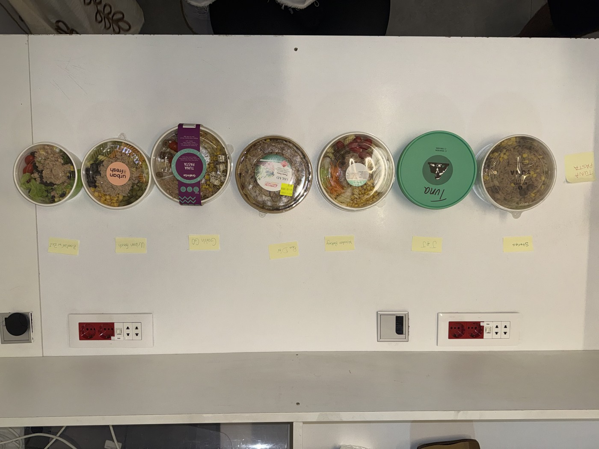
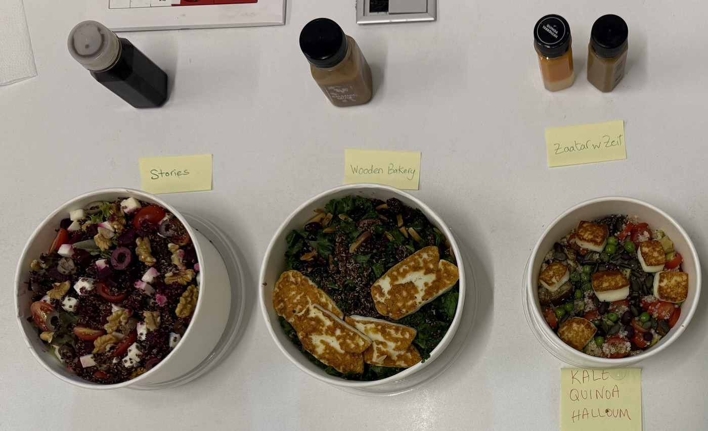

STORIESPRODUCTS & COMPETITORSBENCHMARK
→ / ← change page · PageDown, Space or a clicker scrolls, then turns the page · Exit is in the top bar


| #1 Joe & The Juice | #2 Alforno | #3 Pain d’Or | #4 Espresso Lab | #5 Stories | #6 Moulin d’Or | |
|---|---|---|---|---|---|---|
| The Sandwich | ||||||
| Bread | Special Bread | White Toast | White | Ciabatta | White | White |
| Ingredients | Tuna, Jalapenos, Tomato | Tuna, Lettuce, Corn | Tuna, Ice berg, Pickles, Corn, Tomato | Tuna, Lettuce, Cornichon | Tuna, Tomato, Lettuce, Pickles | Tuna, Lettuce, Pickles |
| Main-ingredient weight / Length | 18 cm | 25 cm | 23.5 cm | 18 cm | 30 cm | 25 cm |
| Add-ons | - | - | - | - | - | - |
| Sauce / Condiments | Pesto & Tabasco | Mayo | Mayo | Mayo | Mayo | Mayo |
| Serving Temp. | Cold | Cold | Cold | Cold | Cold | Cold |
| Nutrition Info | Yes on Label | No | No | No | No | No |
| Price & KiTS Value Analysis | ||||||
| Price | 1,074,000 LBP | 450,000 LBP | 527,900 LBP | 850,000 LBP | 600,000 LBP | 621,000 LBP |
| ▸ per cm | 59,667 LBP | 18,000 LBP | 22,464 LBP | 47,222 LBP | 20,000 LBP | 24,840 LBP |
| ▸ per 100g of main ingredient | — (no weight recorded) | — (no weight recorded) | — (no weight recorded) | — (no weight recorded) | — (no weight recorded) | — (no weight recorded) |
| The Experience | ||||||
| Presentation | Excellent | Excellent | Poor | Good | Poor | Good |
| Packaging | Excellent | Excellent | Good | Good | Good | Good |
Stories' price of 600,000 LBP is 3% below the median of the 5 competitors (621,000 LBP). Its length is 30 cm against a competitor median of 23.5 cm (28% larger), so per unit (per cm) it is 19% below the median. The larger portion widens the saving. The field team ranked Stories #5 of 6 on overall experience.


| #1 Alforno | #2 Joe & The Juice | #3 Pain d’Or | #4 Starbucks | #5 Moulin d’Or | #6 Stories | |
|---|---|---|---|---|---|---|
| The Sandwich | ||||||
| Bread | White | Special Bread | White (toasted) | Ciabatta | White | Brown |
| Ingredients | Halloumi, Tomato, Cucumber | Halloumi, Mint, Tomato, Cucumber | Halloumi, Cucumber | Halloumi, Mint, Tomato | Halloumi, Mint, Tomato, Cucumber, Olives | Halloumi, Arugula, Cucumber, Cherry Tomato, Olives |
| Main-ingredient weight / Length | 88 g · 25 cm | 34 g · 18 cm | 43 g · 23.5 cm | 39 g · 17 cm | 57 g · 25 cm | 58 g · 28 cm |
| Add-ons | - | - | - | - | - | - |
| Sauce / Condiments | Olive Oil | Olive Pesto | - | Olive Oil | - | Pesto Sauce |
| Serving Temp. | Cold | Cold | Hot | Customer's Choice | Cold | Cold |
| Nutrition Info | No | Yes on Label | No | Yes on Label | No | No |
| Price & KiTS Value Analysis | ||||||
| Price | 405,000 LBP | 985,000 LBP | 538,200 LBP | 600,000 LBP | 612,000 LBP | 550,000 LBP |
| ▸ per cm | 16,200 LBP | 54,722 LBP | 22,902 LBP | 35,294 LBP | 24,480 LBP | 19,643 LBP |
| ▸ per 100g of main ingredient | 460,227 LBP | 2,897,059 LBP | 1,251,628 LBP | 1,538,462 LBP | 1,073,684 LBP | 948,276 LBP |
| The Experience | ||||||
| Presentation | Good | Excellent | Good | Good | Good | Poor |
| Packaging | Good | Excellent | Poor | Excellent | Good | Good |
Stories' price of 550,000 LBP is 8% below the median of the 5 competitors (600,000 LBP). Its main-ingredient weight is 58 g against a competitor median of 43 g (35% larger), so per unit (per 100g of main ingredient) it is 24% below the median. The larger main-ingredient portion widens the saving. The field team ranked Stories #6 of 6 on overall experience.


| #1 Alforno | #2 Stories | #3 Joe & The Juice | |
|---|---|---|---|
| The Sandwich | |||
| Bread | White | White | Special Bread |
| Ingredients | Chicken, Lettuce, Parmesan | Chicken, Pickles, Lettuce, Parmesan Cheese | Chicken, Turkey bacon, Parmesan Cheese, Arugula |
| Main-ingredient weight / Length | 58 g · 25 cm | 75 g · 30 cm | 40 g (chicken) + 12 g turkey (not counted) · 18 cm |
| Add-ons | - | - | - |
| Sauce / Condiments | Caesar Sauce | Caesar Sauce | Tabasco & Caesar Sauce |
| Serving Temp. | Cold | Cold | Cold |
| Nutrition Info | No | No | Yes on Label |
| Price & KiTS Value Analysis | |||
| Price | 595,000 LBP | 800,000 LBP | 1,343,000 LBP |
| ▸ per cm | 23,800 LBP | 26,667 LBP | 74,611 LBP |
| ▸ per 100g of main ingredient | 1,025,862 LBP | 1,066,667 LBP | 3,357,500 LBP |
| The Experience | |||
| Presentation | Good | Poor | Excellent |
| Packaging | Good | Good | Excellent |
Stories' price of 800,000 LBP is 17% below the median of the 2 competitors (969,000 LBP). Its main-ingredient weight is 75 g against a competitor median of 49 g (53% larger), so per unit (per 100g of main ingredient) it is 51% below the median. The larger main-ingredient portion widens the saving. The field team ranked Stories #2 of 3 on overall experience.


| #1 Stories | #2 Moulin d’Or | #3 Pain d’Or | #4 Alforno | |
|---|---|---|---|---|
| The Sandwich | ||||
| Bread | White | White | White | Brown |
| Ingredients | Rosto, Mint, Arugula, Tomato, Pickles | Rosto, Mint, Tomato, Pickles | Rosto, Tomato, Pickles, Mint | Smoked Rosto, Cheddar, Tomato, Lettuce, Pickles |
| Main-ingredient weight / Length | 52 g · 30 cm | 53 g · 25 cm | 58 g · 23.5 cm | 51 g · 25 cm |
| Add-ons | - | - | - | - |
| Sauce / Condiments | Mayo & Mustard | Mustard | Mustard | Mayo |
| Serving Temp. | Cold | Cold | Cold | Cold |
| Nutrition Info | No | No | No | No |
| Price & KiTS Value Analysis | ||||
| Price | 850,000 LBP | 540,000 LBP | 807,300 LBP | 585,000 LBP |
| ▸ per cm | 28,333 LBP | 21,600 LBP | 34,353 LBP | 23,400 LBP |
| ▸ per 100g of main ingredient | 1,634,615 LBP | 1,018,868 LBP | 1,391,897 LBP | 1,147,059 LBP |
| The Experience | ||||
| Presentation | Poor | Good | Good | Excellent |
| Packaging | Good | Good | Good | Excellent |
Stories' price of 850,000 LBP is 45% above the median of the 3 competitors (585,000 LBP). Its main-ingredient weight is 52 g against a competitor median of 53 g (2% smaller), so per unit (per 100g of main ingredient) it is 43% above the median. The field team ranked Stories #1 of 4 on overall experience.


| #1 Joe & The Juice | #2 Moulin d’Or | #3 Pain d’Or | #4 Stories | #5 Alforno | |
|---|---|---|---|---|---|
| The Sandwich | |||||
| Bread | Special Bread | White | White | White | White |
| Ingredients | Labneh, Tomato, Olives, Cucumber, Mint | Labneh, Mint, Tomato, Cucumber, Olives | Labneh, Mint, Tomato, Cucumber | Labneh, Arugula, Tomato, Cucumber, Olives | Labneh, Mint, Tomato, Cucumber |
| Main-ingredient weight / Length | 18 cm | 25 cm | 23.5 cm | 30 cm | 25 cm |
| Add-ons | - | - | - | - | - |
| Sauce / Condiments | Olive Oil | Olive Oil | - | Olive Oil | Olive Oil |
| Serving Temp. | Cold | Cold | Cold | Cold | Cold |
| Nutrition Info | Yes on Label | No | No | No | No |
| Price & KiTS Value Analysis | |||||
| Price | 985,000 LBP | 270,000 LBP | 358,800 LBP | 500,000 LBP | 292,500 LBP |
| ▸ per cm | 54,722 LBP | 10,800 LBP | 15,268 LBP | 16,667 LBP | 11,700 LBP |
| ▸ per 100g of main ingredient | — (no weight recorded) | — (no weight recorded) | — (no weight recorded) | — (no weight recorded) | — (no weight recorded) |
| The Experience | |||||
| Presentation | Excellent | Good | Good | Good | Good |
| Packaging | Excellent | Good | Good | Good | Good |
Stories' price of 500,000 LBP is 54% above the median of the 4 competitors (325,650 LBP). Its length is 30 cm against a competitor median of 24.25 cm (24% larger), so per unit (per cm) it is 24% above the median. The larger portion narrows the premium but does not close it. The field team ranked Stories #4 of 5 on overall experience.


| #1 Joe & The Juice | #2 Alforno | #3 Stories | #4 Espresso Lab | #5 Pain d’Or | #6 Moulin d’Or | |
|---|---|---|---|---|---|---|
| The Sandwich | ||||||
| Bread | Special Bread | White | Brown | Toast | White | White |
| Ingredients | Turkey, Mozzarella Cheese (Fresh 3 slices), Tomato | Turkey, Kashkaval Cheese, Tomato, Pickles | Turkey, Swiss Cheese, Lettuce, Tomato, Pickles | Turkey, Emmental Cheese, Lettuce, Cornichon | Turkey, Cheddar Cheese, Tomato, Lettuce, Pickles | Turkey, Mozzarella Cheese, Lettuce, Tomato, Pickles, Corn |
| Turkey slices | 3 | 3 | 5 | 2 | 3 | 2 |
| Main-ingredient weight / Length | 18 cm | 25 cm | 25 cm | 15 cm | 23.5 cm | 25 cm |
| Add-ons | - | - | - | - | Cheddar Cheese | - |
| Sauce / Condiments | Pesto | Mayo & Mustard | Mayo | Honey Mustard | Mayo | Mayo |
| Serving Temp. | Cold | Cold | Cold | Hot | Cold | Cold |
| Nutrition Info | Yes on Label | No | No | No | No | No |
| Price & KiTS Value Analysis | ||||||
| Price | 1,074,000 LBP | 540,000 LBP | 650,000 LBP | 1,000,000 LBP | 717,600 LBP | 720,000 LBP |
| ▸ per cm | 59,667 LBP | 21,600 LBP | 26,000 LBP | 66,667 LBP | 30,536 LBP | 28,800 LBP |
| ▸ per 100g of main ingredient | — (no weight recorded) | — (no weight recorded) | — (no weight recorded) | — (no weight recorded) | — (no weight recorded) | — (no weight recorded) |
| ▸ per turkey slice | 358,000 LBP | 180,000 LBP | 130,000 LBP | 500,000 LBP | 239,200 LBP | 360,000 LBP |
| The Experience | ||||||
| Presentation | Excellent | Poor | Poor | Good | Poor | Good |
| Packaging | Excellent | Good | Good | Good | Good | Good |
Price benchmark = median of the competitors that carry each item (Stories excluded), in LBP. Portion metric is price per 100g where weight was recorded, otherwise price per cm; never estimated. Sandwich weights are the main ingredient only (the halloumi, chicken or rosto), as recorded by the field team, not the whole sandwich. Turkey-slice count, where recorded, is shown as an extra marker. Small sample (fewer than 3 competitors): Chicken Caesar.
Size is compared alone, no price, on one measure per item, never mixed or estimated: weight where Stories and at least two competitors have it recorded, otherwise length, otherwise weight against the competitors that have one; benchmark = median of the competitors. Sandwich weights are the main ingredient only (the halloumi, chicken or rosto), not the whole sandwich. Circles are drawn with area proportional to weight. Lengths are drawn to scale on a centimetre ruler. Small sample (fewer than 3 competitors with a size): Chicken Caesar.
Stories is priced above the competitor median on 2 of 6 items and below it on 4. Widest premium: Labneh (+54%). Widest discount: Chicken Caesar (−17%).
Stories is larger than the competitor median on 5 of 6 items and smaller on 0; in line (within ±5%) on 1 (Rosto). Biggest lead: Chicken Caesar (+53%, 75 g vs 49 g). Compared on length (cm) for Tuna, Labneh, Turkey & Cheese and on main-ingredient weight (g) for Halloumi, Chicken Caesar, Rosto.
Stories is the cheapest of the brands compared on 0 of 6 items and the priciest on 1 (Rosto). In between: Tuna (#3 of 6), Halloumi (#3 of 6), Chicken Caesar (#2 of 3), Labneh (#4 of 5), Turkey & Cheese (#2 of 6).
Stories is the largest of the brands compared on 4 of 6 items (Tuna, Chicken Caesar, Labneh, Turkey & Cheese (joint)) and the smallest on 0. In between: Halloumi (#2 of 6), Rosto (#3 of 4).
After adjusting for portion size, Stories is below the competitor median on 4 of 6 items and above it on 2 (Rosto +43%, Labneh +24%). Largest change from the shelf-price gap: Chicken Caesar, −17% → −51% (per 100g main ingredient) — a larger portion widens the gap. Turkey & Cheese is also shown per turkey slice (−64%: Stories 130,000 LBP vs a median of 358,000 LBP); turkey-slice size varies by bakery, so read it alongside per cm.
| Item | Stories price | Competitor median | Price gap | Portion metric | Adjusted gap | Per-slice gap | Field rank | Competitors |
|---|---|---|---|---|---|---|---|---|
| Tuna | 600,000 LBP | 621,000 LBP | −3% | per cm | −19% | — | #5 of 6 | 5 |
| Halloumi | 550,000 LBP | 600,000 LBP | −8% | per 100g main ingredient | −24% | — | #6 of 6 | 5 |
| Chicken Caesar | 800,000 LBP | 969,000 LBP | −17% | per 100g main ingredient | −51% | — | #2 of 3 | 2 |
| Rosto | 850,000 LBP | 585,000 LBP | +45% | per 100g main ingredient | +43% | — | #1 of 4 | 3 |
| Labneh | 500,000 LBP | 325,650 LBP | +54% | per cm | +24% | — | #4 of 5 | 4 |
| Turkey & Cheese | 650,000 LBP | 720,000 LBP | −10% | per cm | −15% | −64% | #3 of 6 | 5 |
| Item | Measure | Stories | Competitor median | Size gap | Stories size rank | Largest | Smallest | Competitors |
|---|---|---|---|---|---|---|---|---|
| Tuna | cm | 30 cm | 23.5 cm | +28% | #1 of 6 | Stories 30 cm | Espresso Lab 18 cm | 5 |
| Halloumi | g, main ingredient | 58 g | 43 g | +35% | #2 of 6 | Alforno 88 g | Joe & The Juice 34 g | 5 |
| Chicken Caesar | g, main ingredient | 75 g | 49 g | +53% | #1 of 3 | Stories 75 g | Joe & The Juice 40 g | 2 |
| Rosto | g, main ingredient | 52 g | 53 g | −2% | #3 of 4 | Pain d’Or 58 g | Alforno 51 g | 3 |
| Labneh | cm | 30 cm | 24.25 cm | +24% | #1 of 5 | Stories 30 cm | Joe & The Juice 18 cm | 4 |
| Turkey & Cheese | cm | 25 cm | 23.5 cm | +6% | #1 of 6 (joint) | Stories 25 cm | Espresso Lab 15 cm | 5 |
Presentation and Packaging are the field team's tiers (Poor / Good / Excellent), scored 0 / 0.5 / 1 on the radar. Price and Portion value are each brand's gap to the competitor median, so cheaper plots further out; the median sits at 0.5. Client rank is the position inside each item's own ranking, not an averaged rank. The category view takes the median across items. Quadrants: Value leader = cheaper per portion than the median with experience at or above it; Premium = pricier, at or above; Weak = cheaper, below; Overpriced = pricier, below. A tie with the median counts as at-or-better; the rule is identical for every brand.
From the customer's side (cheaper and larger count as better), Stories is better than the competitor median on Price, Portion value; level with the competitor median on Packaging; worse than the competitor median on Presentation, Client rank.
From the customer's side (cheaper and larger count as better), Stories is better than the competitor median on Price, Portion value; level with the competitor median on Packaging; worse than the competitor median on Presentation, Client rank.
From the customer's side (cheaper and larger count as better), Stories is better than the competitor median on Price, Portion value; level with the competitor median on Packaging; worse than the competitor median on Presentation, Client rank.
From the customer's side (cheaper and larger count as better), Stories is better than the competitor median on Price, Portion value; level with the competitor median on Client rank; worse than the competitor median on Presentation, Packaging.
From the customer's side (cheaper and larger count as better), Stories is better than the competitor median on Client rank; level with the competitor median on Packaging; worse than the competitor median on Presentation, Price, Portion value.
From the customer's side (cheaper and larger count as better), Stories is level with the competitor median on Presentation, Packaging; worse than the competitor median on Price, Portion value, Client rank.
From the customer's side (cheaper and larger count as better), Stories is better than the competitor median on Price, Portion value, Client rank; level with the competitor median on Packaging; worse than the competitor median on Presentation.
Stories is rated Presentation Poor / Packaging Good on 5 of 6 items; Presentation Good / Packaging Good on 1 of 6 items.
Stories is rated Presentation Poor / Packaging Good on 1 of 1 item.
Stories is rated Presentation Poor / Packaging Good on 1 of 1 item.
Stories is rated Presentation Poor / Packaging Good on 1 of 1 item.
Stories is rated Presentation Poor / Packaging Good on 1 of 1 item.
Stories is rated Presentation Good / Packaging Good on 1 of 1 item.
Stories is rated Presentation Poor / Packaging Good on 1 of 1 item.
| Item | Price | Portion value | Presentation | Packaging | Client rank |
|---|---|---|---|---|---|
| Tuna | −3% 600,000 LBP vs 621,000 LBP | −19% per cm: 20,000 LBP vs 24,840 LBP | Poor median Good | Good median Good | #5 of 6 client's ranking |
| Halloumi | −8% 550,000 LBP vs 600,000 LBP | −24% per 100g main ingredient: 948,276 LBP vs 1,251,628 LBP | Poor median Good | Good median Good | #6 of 6 client's ranking |
| Chicken Caesar | −17% 800,000 LBP vs 969,000 LBP | −51% per 100g main ingredient: 1,066,667 LBP vs 2,191,681 LBP | Poor median Good–Excellent | Good median Good–Excellent | #2 of 3 client's ranking |
| Rosto | +45% 850,000 LBP vs 585,000 LBP | +43% per 100g main ingredient: 1,634,615 LBP vs 1,147,059 LBP | Poor median Good | Good median Good | #1 of 4 client's ranking |
| Labneh | +54% 500,000 LBP vs 325,650 LBP | +24% per cm: 16,667 LBP vs 13,484 LBP | Good median Good | Good median Good | #4 of 5 client's ranking |
| Turkey & Cheese | −10% 650,000 LBP vs 720,000 LBP | −15% per cm: 26,000 LBP vs 30,536 LBP | Poor median Good | Good median Good | #3 of 6 client's ranking |
Across 6 items and 5 measures, Stories is more favourable to customers than the median in 9 cells, in line in 8 and less favourable in 13. A price premium is not inherently negative; it is shown from the customer's side.
| Item | Brand | Presentation | Packaging | Price vs median | Portion metric vs median | Client rank | Quadrant |
|---|---|---|---|---|---|---|---|
| Tuna | Stories | Poor | Good | −3% | −19% | #5 of 6 | Weak |
| Tuna | Moulin d’Or | Good | Good | 0% | 0% | #6 of 6 | Value leader |
| Tuna | Joe & The Juice | Excellent | Excellent | +73% | +140% | #1 of 6 | Premium |
| Tuna | Pain d’Or | Poor | Good | −15% | −10% | #3 of 6 | Weak |
| Tuna | Alforno | Excellent | Excellent | −28% | −28% | #2 of 6 | Value leader |
| Tuna | Espresso Lab | Good | Good | +37% | +90% | #4 of 6 | Premium |
| Halloumi | Stories | Poor | Good | −8% | −24% | #6 of 6 | Weak |
| Halloumi | Moulin d’Or | Good | Good | +2% | −14% | #5 of 6 | Value leader |
| Halloumi | Starbucks | Good | Excellent | 0% | +23% | #4 of 6 | Premium |
| Halloumi | Joe & The Juice | Excellent | Excellent | +64% | +131% | #2 of 6 | Premium |
| Halloumi | Pain d’Or | Good | Poor | −10% | 0% | #3 of 6 | Weak |
| Halloumi | Alforno | Good | Good | −32% | −63% | #1 of 6 | Value leader |
| Chicken Caesar | Stories | Poor | Good | −17% | −51% | #2 of 3 | Weak |
| Chicken Caesar | Joe & The Juice | Excellent | Excellent | +39% | +53% | #3 of 3 | Premium |
| Chicken Caesar | Alforno | Good | Good | −39% | −53% | #1 of 3 | Weak |
| Rosto | Stories | Poor | Good | +45% | +43% | #1 of 4 | Overpriced |
| Rosto | Moulin d’Or | Good | Good | −8% | −11% | #2 of 4 | Value leader |
| Rosto | Pain d’Or | Good | Good | +38% | +21% | #3 of 4 | Premium |
| Rosto | Alforno | Excellent | Excellent | 0% | 0% | #4 of 4 | Value leader |
| Labneh | Stories | Good | Good | +54% | +24% | #4 of 5 | Premium |
| Labneh | Moulin d’Or | Good | Good | −17% | −20% | #2 of 5 | Value leader |
| Labneh | Joe & The Juice | Excellent | Excellent | +202% | +306% | #1 of 5 | Premium |
| Labneh | Pain d’Or | Good | Good | +10% | +13% | #3 of 5 | Premium |
| Labneh | Alforno | Good | Good | −10% | −13% | #5 of 5 | Value leader |
| Turkey & Cheese | Stories | Poor | Good | −10% | −15% | #3 of 6 | Weak |
| Turkey & Cheese | Moulin d’Or | Good | Good | 0% | −6% | #6 of 6 | Value leader |
| Turkey & Cheese | Joe & The Juice | Excellent | Excellent | +49% | +95% | #1 of 6 | Premium |
| Turkey & Cheese | Pain d’Or | Poor | Good | 0% | 0% | #5 of 6 | Weak |
| Turkey & Cheese | Alforno | Poor | Good | −25% | −29% | #2 of 6 | Weak |
| Turkey & Cheese | Espresso Lab | Good | Good | +39% | +118% | #4 of 6 | Premium |
The field team's Presentation and Packaging tiers for every item, with their own written notes. Tiers and notes are the researchers' words, unedited.
| Stories | Alforno | Joe & The Juice | Moulin d’Or | Pain d’Or | Espresso Lab | Starbucks | |
|---|---|---|---|---|---|---|---|
| Tuna | PresentationPoorPackagingGood | PresentationExcellentPackagingExcellent | PresentationExcellentPackagingExcellent | PresentationGoodPackagingGood | PresentationPoorPackagingGood | PresentationGoodPackagingGood | — |
| Halloumi | PresentationPoorPackagingGood | PresentationGoodPackagingGood | PresentationExcellentPackagingExcellent | PresentationGoodPackagingGood | PresentationGoodPackagingPoor | — | PresentationGoodPackagingExcellent |
| Chicken Caesar | PresentationPoorPackagingGood | PresentationGoodPackagingGood | PresentationExcellentPackagingExcellent | — | — | — | — |
| Rosto | PresentationPoorPackagingGood | PresentationExcellentPackagingExcellent | — | PresentationGoodPackagingGood | PresentationGoodPackagingGood | — | — |
| Labneh | PresentationGoodPackagingGood | PresentationGoodPackagingGood | PresentationExcellentPackagingExcellent | PresentationGoodPackagingGood | PresentationGoodPackagingGood | — | — |
| Turkey & Cheese | PresentationPoorPackagingGood | PresentationPoorPackagingGood | PresentationExcellentPackagingExcellent | PresentationGoodPackagingGood | PresentationPoorPackagingGood | PresentationGoodPackagingGood | — |


| #1 Stories | #2 Cremino | #3 Wooden Bakery | |
|---|---|---|---|
| The Pastry | |||
| Weight | 141 g | 124 g | 115 g |
| Price & KiTS Value Analysis | |||
| Price | 550,000 LBP | 216,000 LBP | 269,100 LBP |
| ▸ per 100g | 390,071 LBP | 174,194 LBP | 234,000 LBP |
| The Experience | |||
| Presentation | Excellent | Poor | Poor |
| Packaging | Excellent | Good | Good |
Stories' price of 550,000 LBP is 127% above the median of the 2 competitors (242,550 LBP). Its portion is 141 g against a competitor median of 119.5 g (18% larger), so per unit (per 100g) it is 91% above the median. The larger portion narrows the premium but does not close it. The field team ranked Stories #1 of 3 on overall experience.


| #1 Cremino | #2 Stories | |
|---|---|---|
| The Pastry | ||
| Weight | 56 g | 49 g |
| Price & KiTS Value Analysis | ||
| Price | 360,000 LBP | 450,000 LBP |
| ▸ per 100g | 642,857 LBP | 918,367 LBP |
| The Experience | ||
| Presentation | Good | Good |
| Packaging | Good | Good |
Stories' price of 450,000 LBP is 25% above the only competitor's price (360,000 LBP). Its portion is 49 g against the competitor's 56 g (12% smaller), so per unit (per 100g) it is 43% above the competitor. The smaller portion makes the per-unit premium larger than the shelf-price premium. The field team ranked Stories #2 of 2 on overall experience.
| #1 Cremino | #2 Moulin d’Or | #3 Stories | |
|---|---|---|---|
| The Pastry | |||
| Weight | 55 g | 66 g | 65 g |
| Price & KiTS Value Analysis | |||
| Price | 360,000 LBP | 297,000 LBP | 450,000 LBP |
| ▸ per 100g | 654,545 LBP | 450,000 LBP | 692,308 LBP |
| The Experience | |||
| Presentation | Good | Good | Good |
| Packaging | Good | Good | Good |
Stories' price of 450,000 LBP is 37% above the median of the 2 competitors (328,500 LBP). Its portion is 65 g against a competitor median of 60.5 g (7% larger), so per unit (per 100g) it is 25% above the median. The larger portion narrows the premium but does not close it. The field team ranked Stories #3 of 3 on overall experience.


| #1 Joe & The Juice | #2 Stories | #3 Starbucks | |
|---|---|---|---|
| The Pastry | |||
| Weight | 50 g | 156 g | 84 g |
| Price & KiTS Value Analysis | |||
| Price | 492,000 LBP | 500,000 LBP | 550,000 LBP |
| ▸ per 100g | 984,000 LBP | 320,513 LBP | 654,762 LBP |
| The Experience | |||
| Presentation | Excellent | Poor | Good |
| Packaging | Excellent | Poor | Good |
Stories' price of 500,000 LBP is 4% below the median of the 2 competitors (521,000 LBP). Its portion is 156 g against a competitor median of 67 g (133% larger), so per unit (per 100g) it is 61% below the median. The larger portion widens the saving. The field team ranked Stories #2 of 3 on overall experience.


| #1 Stories | #2 Wooden Bakery | |
|---|---|---|
| The Pastry | ||
| Weight | 177 g | 95 g |
| Price & KiTS Value Analysis | ||
| Price | 650,000 LBP | 470,925 LBP |
| ▸ per 100g | 367,232 LBP | 495,711 LBP |
| The Experience | ||
| Presentation | Good | Poor |
| Packaging | Good | Good |
Stories' price of 650,000 LBP is 38% above the only competitor's price (470,925 LBP). Its portion is 177 g against the competitor's 95 g (86% larger), so per unit (per 100g) it is 26% below the competitor. The larger portion more than offsets the higher price. The field team ranked Stories #1 of 2 on overall experience.


| #1 Stories | #2 Cremino | #3 Starbucks | #4 Wooden Bakery | |
|---|---|---|---|---|
| The Pastry | ||||
| Weight | 164 g | 73 g | 90 g | 99 g |
| Price & KiTS Value Analysis | ||||
| Price | 650,000 LBP | 360,000 LBP | 600,000 LBP | 448,500 LBP |
| ▸ per 100g | 396,341 LBP | 493,151 LBP | 666,667 LBP | 453,030 LBP |
| The Experience | ||||
| Presentation | Good | Good | Poor | Good |
| Packaging | Good | Good | Good | Good |
Stories' price of 650,000 LBP is 45% above the median of the 3 competitors (448,500 LBP). Its portion is 164 g against a competitor median of 90 g (82% larger), so per unit (per 100g) it is 20% below the median. The larger portion more than offsets the higher price. The field team ranked Stories #1 of 4 on overall experience.


| #1 Starbucks | #2 Joe & The Juice | #3 Stories | |
|---|---|---|---|
| The Pastry | |||
| Weight | 82 g (measured) · 96 g advertised | 65 g | 41 g |
| Price & KiTS Value Analysis | |||
| Price | 450,000 LBP | 492,000 LBP | 350,000 LBP |
| ▸ per 100g | 548,780 LBP | 756,923 LBP | 853,659 LBP |
| The Experience | |||
| Presentation | Excellent | Good | Good |
| Packaging | Excellent | Excellent | Good |
Stories' price of 350,000 LBP is 26% below the median of the 2 competitors (471,000 LBP). Its portion is 41 g against a competitor median of 73.5 g (44% smaller), so per unit (per 100g) it is 31% above the median. The lower shelf price is more than offset by the smaller portion. The field team ranked Stories #3 of 3 on overall experience.


| #1 Starbucks | #2 Joe & The Juice | #3 Stories | #4 Cremino | #5 Espresso Lab | |
|---|---|---|---|---|---|
| The Pastry | |||||
| Weight | 65 g | 97 g | 160 g | 129 g | 130 g |
| Price & KiTS Value Analysis | |||||
| Price | 400,000 LBP | 492,000 LBP | 550,000 LBP | 360,000 LBP | 550,000 LBP |
| ▸ per 100g | 615,385 LBP | 507,216 LBP | 343,750 LBP | 279,070 LBP | 423,077 LBP |
| The Experience | |||||
| Presentation | Good | Good | Good | Good | Good |
| Packaging | Good | Excellent | Good | Good | Good |
Stories' price of 550,000 LBP is 23% above the median of the 4 competitors (446,000 LBP). Its portion is 160 g against a competitor median of 113 g (42% larger), so per unit (per 100g) it is 26% below the median. The larger portion more than offsets the higher price. The field team ranked Stories #3 of 5 on overall experience.


| #1 Joe & The Juice | #2 Starbucks | #3 Stories | |
|---|---|---|---|
| The Pastry | |||
| Weight | 64 g | 103 g | 101 g |
| Price & KiTS Value Analysis | |||
| Price | 492,000 LBP | 400,000 LBP | 350,000 LBP |
| ▸ per 100g | 768,750 LBP | 388,350 LBP | 346,535 LBP |
| The Experience | |||
| Presentation | Excellent | Good | Poor |
| Packaging | Excellent | Good | Poor |
Stories' price of 350,000 LBP is 22% below the median of the 2 competitors (446,000 LBP). Its portion is 101 g against a competitor median of 83.5 g (21% larger), so per unit (per 100g) it is 40% below the median. The larger portion widens the saving. The field team ranked Stories #3 of 3 on overall experience.


| #1 Joe & The Juice | #2 Starbucks | #3 Stories | |
|---|---|---|---|
| The Pastry | |||
| Weight | 51 g | 85 g | 99 g (mean of two muffins: 104 g, 94 g) |
| Price & KiTS Value Analysis | |||
| Price | 492,000 LBP | 400,000 LBP | 350,000 LBP |
| ▸ per 100g | 964,706 LBP | 470,588 LBP | 353,535 LBP |
| The Experience | |||
| Presentation | Excellent | Good | Good |
| Packaging | Excellent | Good | Poor |
Stories' price of 350,000 LBP is 22% below the median of the 2 competitors (446,000 LBP). Its portion is 99 g against a competitor median of 68 g (46% larger), so per unit (per 100g) it is 51% below the median. The larger portion widens the saving. The field team ranked Stories #3 of 3 on overall experience.


| #1 Stories | #2 Cremino | #3 Wooden Bakery | |
|---|---|---|---|
| The Pastry | |||
| Weight | 84 g | 57 g | 51 g |
| Price & KiTS Value Analysis | |||
| Price | 400,000 LBP | 160,000 LBP | 40,365 LBP |
| ▸ per 100g | 476,190 LBP | 280,702 LBP | 79,147 LBP |
| The Experience | |||
| Presentation | Good | Good | Poor |
| Packaging | Poor | Good | Good |
Stories' price of 400,000 LBP is 299% above the median of the 2 competitors (100,182 LBP). Its portion is 84 g against a competitor median of 54 g (56% larger), so per unit (per 100g) it is 165% above the median. The larger portion narrows the premium but does not close it. The field team ranked Stories #1 of 3 on overall experience.
Price benchmark = median of the competitors that carry each item (Stories excluded), in LBP. Portion metric is price per 100g where weight was recorded, otherwise price per cm; never estimated. Small sample (fewer than 3 competitors): Cinnamon Roll, Éclair, Éclair Chocolat, Carrot Cake, Cheese Cake — Lotus, Brownies, Muffin — Double Chocolate, Muffin — Blueberry, Sablet.
Size is compared alone, no price, on one measure per item, never mixed or estimated: weight where Stories and at least two competitors have it recorded, otherwise length, otherwise weight against the competitors that have one; benchmark = median of the competitors. Circles are drawn with area proportional to weight. Small sample (fewer than 3 competitors with a size): Cinnamon Roll, Éclair, Éclair Chocolat, Carrot Cake, Cheese Cake — Lotus, Brownies, Muffin — Double Chocolate, Muffin — Blueberry, Sablet.
Stories is priced above the competitor median on 7 of 11 items and below it on 4. Widest premium: Sablet (+299%). Widest discount: Brownies (−26%).
Stories is larger than the competitor median on 9 of 11 items and smaller on 2. Biggest lead: Carrot Cake (+133%, 156 g vs 67 g). Biggest shortfall: Brownies (−44%, 41 g vs 73.5 g).
Stories is the cheapest of the brands compared on 3 of 11 items (Brownies, Muffin — Double Chocolate, Muffin — Blueberry) and the priciest on 7 (Cinnamon Roll, Éclair, Éclair Chocolat, Cheese Cake — Lotus, Cheese Cake — Blueberry, Lazy Cake (joint), Sablet). In between: Carrot Cake (#2 of 3).
Stories is the largest of the brands compared on 7 of 11 items (Cinnamon Roll, Carrot Cake, Cheese Cake — Lotus, Cheese Cake — Blueberry, Lazy Cake, Muffin — Blueberry, Sablet) and the smallest on 2 (Éclair, Brownies). In between: Éclair Chocolat (#2 of 3), Muffin — Double Chocolate (#2 of 3).
After adjusting for portion size, Stories is below the competitor median on 5 of 9 items and above it on 4 (Sablet +165%, Cinnamon Roll +91%, Brownies +31%, Éclair Chocolat +25%). Largest change from the shelf-price gap: Sablet, +299% → +165% (per 100g) — a larger portion narrows the gap.
| Item | Stories price | Competitor median | Price gap | Portion metric | Adjusted gap | Per-slice gap | Field rank | Competitors |
|---|---|---|---|---|---|---|---|---|
| Cinnamon Roll | 550,000 LBP | 242,550 LBP | +127% | per 100g | +91% | — | #1 of 3 | 2 |
| Éclair | 450,000 LBP | 360,000 LBP | +25% | — | — | — | #2 of 2 | 1 |
| Éclair Chocolat | 450,000 LBP | 328,500 LBP | +37% | per 100g | +25% | — | #3 of 3 | 2 |
| Carrot Cake | 500,000 LBP | 521,000 LBP | −4% | per 100g | −61% | — | #2 of 3 | 2 |
| Cheese Cake — Lotus | 650,000 LBP | 470,925 LBP | +38% | — | — | — | #1 of 2 | 1 |
| Cheese Cake — Blueberry | 650,000 LBP | 448,500 LBP | +45% | per 100g | −20% | — | #1 of 4 | 3 |
| Brownies | 350,000 LBP | 471,000 LBP | −26% | per 100g | +31% | — | #3 of 3 | 2 |
| Lazy Cake | 550,000 LBP | 446,000 LBP | +23% | per 100g | −26% | — | #3 of 5 | 4 |
| Muffin — Double Chocolate | 350,000 LBP | 446,000 LBP | −22% | per 100g | −40% | — | #3 of 3 | 2 |
| Muffin — Blueberry | 350,000 LBP | 446,000 LBP | −22% | per 100g | −51% | — | #3 of 3 | 2 |
| Sablet | 400,000 LBP | 100,182 LBP | +299% | per 100g | +165% | — | #1 of 3 | 2 |
| Item | Measure | Stories | Competitor median | Size gap | Stories size rank | Largest | Smallest | Competitors |
|---|---|---|---|---|---|---|---|---|
| Cinnamon Roll | g | 141 g | 119.5 g | +18% | #1 of 3 | Stories 141 g | Wooden Bakery 115 g | 2 |
| Éclair | g | 49 g | 56 g | −12% | #2 of 2 | Cremino 56 g | Stories 49 g | 1 |
| Éclair Chocolat | g | 65 g | 60.5 g | +7% | #2 of 3 | Moulin d’Or 66 g | Cremino 55 g | 2 |
| Carrot Cake | g | 156 g | 67 g | +133% | #1 of 3 | Stories 156 g | Joe & The Juice 50 g | 2 |
| Cheese Cake — Lotus | g | 177 g | 95 g | +86% | #1 of 2 | Stories 177 g | Wooden Bakery 95 g | 1 |
| Cheese Cake — Blueberry | g | 164 g | 90 g | +82% | #1 of 4 | Stories 164 g | Cremino 73 g | 3 |
| Brownies | g | 41 g | 73.5 g | −44% | #3 of 3 | Starbucks 82 g | Stories 41 g | 2 |
| Lazy Cake | g | 160 g | 113 g | +42% | #1 of 5 | Stories 160 g | Starbucks 65 g | 4 |
| Muffin — Double Chocolate | g | 101 g | 83.5 g | +21% | #2 of 3 | Starbucks 103 g | Joe & The Juice 64 g | 2 |
| Muffin — Blueberry | g | 99 g | 68 g | +46% | #1 of 3 | Stories 99 g | Joe & The Juice 51 g | 2 |
| Sablet | g | 84 g | 54 g | +56% | #1 of 3 | Stories 84 g | Wooden Bakery 51 g | 2 |
Presentation and Packaging are the field team's tiers (Poor / Good / Excellent), scored 0 / 0.5 / 1 on the radar. Price and Portion value are each brand's gap to the competitor median, so cheaper plots further out; the median sits at 0.5. Client rank is the position inside each item's own ranking, not an averaged rank. The category view takes the median across items. Quadrants: Value leader = cheaper per portion than the median with experience at or above it; Premium = pricier, at or above; Weak = cheaper, below; Overpriced = pricier, below. A tie with the median counts as at-or-better; the rule is identical for every brand.
From the customer's side (cheaper and larger count as better), Stories is better than the competitor median on Portion value; level with the competitor median on Presentation, Packaging, Client rank; worse than the competitor median on Price.
From the customer's side (cheaper and larger count as better), Stories is better than the competitor median on Presentation, Packaging, Client rank; worse than the competitor median on Price, Portion value.
From the customer's side (cheaper and larger count as better), Stories is level with the competitor median on Presentation, Packaging; worse than the competitor median on Price, Client rank.
From the customer's side (cheaper and larger count as better), Stories is level with the competitor median on Presentation, Packaging; worse than the competitor median on Price, Portion value, Client rank.
From the customer's side (cheaper and larger count as better), Stories is better than the competitor median on Price, Portion value; level with the competitor median on Client rank; worse than the competitor median on Presentation, Packaging.
From the customer's side (cheaper and larger count as better), Stories is better than the competitor median on Presentation, Client rank; level with the competitor median on Packaging; worse than the competitor median on Price.
From the customer's side (cheaper and larger count as better), Stories is better than the competitor median on Portion value, Client rank; level with the competitor median on Presentation, Packaging; worse than the competitor median on Price.
From the customer's side (cheaper and larger count as better), Stories is better than the competitor median on Price; worse than the competitor median on Presentation, Packaging, Portion value, Client rank.
From the customer's side (cheaper and larger count as better), Stories is better than the competitor median on Portion value; level with the competitor median on Presentation, Packaging, Client rank; worse than the competitor median on Price.
From the customer's side (cheaper and larger count as better), Stories is better than the competitor median on Price, Portion value; worse than the competitor median on Presentation, Packaging, Client rank.
From the customer's side (cheaper and larger count as better), Stories is better than the competitor median on Price, Portion value; worse than the competitor median on Presentation, Packaging, Client rank.
From the customer's side (cheaper and larger count as better), Stories is better than the competitor median on Presentation, Client rank; worse than the competitor median on Packaging, Price, Portion value.
Stories is rated Presentation Good / Packaging Good on 6 of 11 items; Presentation Poor / Packaging Poor on 2 of 11 items; Presentation Good / Packaging Poor on 2 of 11 items; Presentation Excellent / Packaging Excellent on 1 of 11 items.
Stories is rated Presentation Excellent / Packaging Excellent on 1 of 1 item.
Stories is rated Presentation Good / Packaging Good on 1 of 1 item.
Stories is rated Presentation Good / Packaging Good on 1 of 1 item.
Stories is rated Presentation Poor / Packaging Poor on 1 of 1 item.
Stories is rated Presentation Good / Packaging Good on 1 of 1 item.
Stories is rated Presentation Good / Packaging Good on 1 of 1 item.
Stories is rated Presentation Good / Packaging Good on 1 of 1 item.
Stories is rated Presentation Good / Packaging Good on 1 of 1 item.
Stories is rated Presentation Poor / Packaging Poor on 1 of 1 item.
Stories is rated Presentation Good / Packaging Poor on 1 of 1 item.
Stories is rated Presentation Good / Packaging Poor on 1 of 1 item.
| Item | Price | Portion value | Presentation | Packaging | Client rank |
|---|---|---|---|---|---|
| Cinnamon Roll | +127% 550,000 LBP vs 242,550 LBP | +91% per 100g: 390,071 LBP vs 204,097 LBP | Excellent median Poor | Excellent median Good | #1 of 3 client's ranking |
| Éclair | +25% 450,000 LBP vs 360,000 LBP | — no portion data | Good median Good | Good median Good | #2 of 2 client's ranking |
| Éclair Chocolat | +37% 450,000 LBP vs 328,500 LBP | +25% per 100g: 692,308 LBP vs 552,272 LBP | Good median Good | Good median Good | #3 of 3 client's ranking |
| Carrot Cake | −4% 500,000 LBP vs 521,000 LBP | −61% per 100g: 320,513 LBP vs 819,381 LBP | Poor median Good–Excellent | Poor median Good–Excellent | #2 of 3 client's ranking |
| Cheese Cake — Lotus | +38% 650,000 LBP vs 470,925 LBP | — no portion data | Good median Poor | Good median Good | #1 of 2 client's ranking |
| Cheese Cake — Blueberry | +45% 650,000 LBP vs 448,500 LBP | −20% per 100g: 396,341 LBP vs 493,151 LBP | Good median Good | Good median Good | #1 of 4 client's ranking |
| Brownies | −26% 350,000 LBP vs 471,000 LBP | +31% per 100g: 853,659 LBP vs 652,852 LBP | Good median Good–Excellent | Good median Excellent | #3 of 3 client's ranking |
| Lazy Cake | +23% 550,000 LBP vs 446,000 LBP | −26% per 100g: 343,750 LBP vs 465,146 LBP | Good median Good | Good median Good | #3 of 5 client's ranking |
| Muffin — Double Chocolate | −22% 350,000 LBP vs 446,000 LBP | −40% per 100g: 346,535 LBP vs 578,550 LBP | Poor median Good–Excellent | Poor median Good–Excellent | #3 of 3 client's ranking |
| Muffin — Blueberry | −22% 350,000 LBP vs 446,000 LBP | −51% per 100g: 353,535 LBP vs 717,647 LBP | Good median Good–Excellent | Poor median Good–Excellent | #3 of 3 client's ranking |
| Sablet | +299% 400,000 LBP vs 100,182 LBP | +165% per 100g: 476,190 LBP vs 179,924 LBP | Good median Poor–Good | Poor median Good | #1 of 3 client's ranking |
Across 11 items and 5 measures, Stories is more favourable to customers than the median in 16 cells, in line in 12 and less favourable in 25. A price premium is not inherently negative; it is shown from the customer's side.
| Item | Brand | Presentation | Packaging | Price vs median | Portion metric vs median | Client rank | Quadrant |
|---|---|---|---|---|---|---|---|
| Cinnamon Roll | Stories | Excellent | Excellent | +127% | +91% | #1 of 3 | Premium |
| Cinnamon Roll | Cremino | Poor | Good | −11% | −15% | #2 of 3 | Value leader |
| Cinnamon Roll | Wooden Bakery | Poor | Good | +11% | +15% | #3 of 3 | Premium |
| Éclair | Stories | Good | Good | +25% | — | #2 of 2 | — |
| Éclair | Cremino | Good | Good | 0% | — | #1 of 2 | — |
| Éclair Chocolat | Stories | Good | Good | +37% | +25% | #3 of 3 | Premium |
| Éclair Chocolat | Cremino | Good | Good | +10% | +19% | #1 of 3 | Premium |
| Éclair Chocolat | Moulin d’Or | Good | Good | −10% | −19% | #2 of 3 | Value leader |
| Carrot Cake | Stories | Poor | Poor | −4% | −61% | #2 of 3 | Weak |
| Carrot Cake | Starbucks | Good | Good | +6% | −20% | #3 of 3 | Weak |
| Carrot Cake | Joe & The Juice | Excellent | Excellent | −6% | +20% | #1 of 3 | Premium |
| Cheese Cake — Lotus | Stories | Good | Good | +38% | — | #1 of 2 | — |
| Cheese Cake — Lotus | Wooden Bakery | Poor | Good | 0% | — | #2 of 2 | — |
| Cheese Cake — Blueberry | Stories | Good | Good | +45% | −20% | #1 of 4 | Value leader |
| Cheese Cake — Blueberry | Cremino | Good | Good | −20% | 0% | #2 of 4 | Value leader |
| Cheese Cake — Blueberry | Starbucks | Poor | Good | +34% | +35% | #3 of 4 | Overpriced |
| Cheese Cake — Blueberry | Wooden Bakery | Good | Good | 0% | −8% | #4 of 4 | Value leader |
| Brownies | Stories | Good | Good | −26% | +31% | #3 of 3 | Overpriced |
| Brownies | Starbucks | Excellent | Excellent | −4% | −16% | #1 of 3 | Value leader |
| Brownies | Joe & The Juice | Good | Excellent | +4% | +16% | #2 of 3 | Overpriced |
| Lazy Cake | Stories | Good | Good | +23% | −26% | #3 of 5 | Value leader |
| Lazy Cake | Cremino | Good | Good | −19% | −40% | #4 of 5 | Value leader |
| Lazy Cake | Starbucks | Good | Good | −10% | +32% | #1 of 5 | Premium |
| Lazy Cake | Espresso Lab | Good | Good | +23% | −9% | #5 of 5 | Value leader |
| Lazy Cake | Joe & The Juice | Good | Excellent | +10% | +9% | #2 of 5 | Premium |
| Muffin — Double Chocolate | Stories | Poor | Poor | −22% | −40% | #3 of 3 | Weak |
| Muffin — Double Chocolate | Starbucks | Good | Good | −10% | −33% | #2 of 3 | Weak |
| Muffin — Double Chocolate | Joe & The Juice | Excellent | Excellent | +10% | +33% | #1 of 3 | Premium |
| Muffin — Blueberry | Stories | Good | Poor | −22% | −51% | #3 of 3 | Weak |
| Muffin — Blueberry | Starbucks | Good | Good | −10% | −34% | #2 of 3 | Weak |
| Muffin — Blueberry | Joe & The Juice | Excellent | Excellent | +10% | +34% | #1 of 3 | Premium |
| Sablet | Stories | Good | Poor | +299% | +165% | #1 of 3 | Overpriced |
| Sablet | Cremino | Good | Good | +60% | +56% | #2 of 3 | Premium |
| Sablet | Wooden Bakery | Poor | Good | −60% | −56% | #3 of 3 | Weak |
The field team's Presentation and Packaging tiers for every item, with their own written notes. Tiers and notes are the researchers' words, unedited.
| Stories | Cremino | Starbucks | Joe & The Juice | Wooden Bakery | Espresso Lab | Moulin d’Or | |
|---|---|---|---|---|---|---|---|
| Cinnamon Roll | PresentationExcellentPackagingExcellent | PresentationPoorPackagingGood | — | — | PresentationPoorPackagingGood | — | — |
| Éclair | PresentationGoodPackagingGood | PresentationGoodPackagingGood | — | — | — | — | — |
| Éclair Chocolat | PresentationGoodPackagingGood | PresentationGoodPackagingGood | — | — | — | — | PresentationGoodPackagingGood |
| Carrot Cake | PresentationPoorPackagingPoor | — | PresentationGoodPackagingGood | PresentationExcellentPackagingExcellent | — | — | — |
| Cheese Cake — Lotus | PresentationGoodPackagingGood | — | — | — | PresentationPoorPackagingGood | — | — |
| Cheese Cake — Blueberry | PresentationGoodPackagingGood | PresentationGoodPackagingGood | PresentationPoorPackagingGood | — | PresentationGoodPackagingGood | — | — |
| Brownies | PresentationGoodPackagingGood | — | PresentationExcellentPackagingExcellent | PresentationGoodPackagingExcellent | — | — | — |
| Lazy Cake | PresentationGoodPackagingGood | PresentationGoodPackagingGood | PresentationGoodPackagingGood | PresentationGoodPackagingExcellent | — | PresentationGoodPackagingGood | — |
| Muffin — Double Chocolate | PresentationPoorPackagingPoor | — | PresentationGoodPackagingGood | PresentationExcellentPackagingExcellent | — | — | — |
| Muffin — Blueberry | PresentationGoodPackagingPoor | — | PresentationGoodPackagingGood | PresentationExcellentPackagingExcellent | — | — | — |
| Sablet | PresentationGoodPackagingPoor | PresentationGoodPackagingGood | — | — | PresentationPoorPackagingGood | — | — |
Every photo is a still from the research team's videos — two lineup clips and one unboxing per competitor, cut into a clip per drink; Stories appears in the lineups only. Each drink is priced in each brand's own cup size, ranked on taste, with value per oz of the stated cup size.


| #1 Starbucks | #2 Stories | #3 Dunkin | #4 Espresso Lab | |
|---|---|---|---|---|
| The Drink | ||||
| Size (brand's own) | Medium | Medium | Medium | Medium |
| Cup size (oz, as stated) | 16 oz | 16 oz | 14 oz | 12 oz |
| Calories / nutrition info | No | No | No | No |
| Price & KiTS Value Analysis | ||||
| Price | 600,000 LBP | 500,000 LBP | 585,000 LBP | 599,000 LBP |
| ▸ per oz | 37,500 LBP | 31,250 LBP | 41,786 LBP | 49,917 LBP |
| The Experience | ||||
| Presentation (deduced from the field notes) | Good | Good | Good | Excellent |
| Packaging | Good | Good | Good | Excellent |
Stories' price of 500,000 LBP is 17% below the median of the 3 competitors (599,000 LBP). Its stated cup size is 16 oz against a competitor median of 14 oz (14% larger), so per unit (per oz) it is 25% below the median. The larger cup widens the saving. The field team ranked Stories #2 of 4 when tasting the drinks.


| #1 Stories | #2 Espresso Lab | #3 Starbucks | #4 Joe & The Juice | #5 Dunkin | |
|---|---|---|---|---|---|
| The Drink | |||||
| Size (brand's own) | Large | Large | Large | Medium | Medium |
| Cup size (oz, as stated) | 20 oz | 16 oz | 20 oz | 16 oz | 14 oz |
| Calories / nutrition info | No | No | No | Yes | No |
| Price & KiTS Value Analysis | |||||
| Price | 550,000 LBP | 750,000 LBP | 550,000 LBP | 627,000 LBP | 540,000 LBP |
| ▸ per oz | 27,500 LBP | 46,875 LBP | 27,500 LBP | 39,188 LBP | 38,571 LBP |
| The Experience | |||||
| Presentation (deduced from the field notes) | Good | Excellent | Good | Excellent | Good |
| Packaging | Good | Excellent | Good | Excellent | Good |
Stories' price of 550,000 LBP is 7% below the median of the 4 competitors (588,500 LBP). Its stated cup size is 20 oz against a competitor median of 16 oz (25% larger), so per unit (per oz) it is 29% below the median. The larger cup widens the saving. The field team ranked Stories #1 of 5 when tasting the drinks.


| #1 Joe & The Juice | #2 Stories | #3 Starbucks | #4 Dunkin | |
|---|---|---|---|---|
| The Drink | ||||
| Size (brand's own) | Small | Medium | Medium | Medium |
| Cup size (oz, as stated) | 12 oz | 16 oz | 16 oz | 14 oz |
| Calories / nutrition info | Yes | No | No | No |
| Price & KiTS Value Analysis | ||||
| Price | 627,000 LBP | 550,000 LBP | 500,000 LBP | 450,000 LBP |
| ▸ per oz | 52,250 LBP | 34,375 LBP | 31,250 LBP | 32,143 LBP |
| The Experience | ||||
| Presentation (deduced from the field notes) | Excellent | Good | Good | Good |
| Packaging | Excellent | Good | Good | Good |


| #1 Starbucks | #2 Espresso Lab | #3 Stories | #4 Joe & The Juice | #5 Dunkin | |
|---|---|---|---|---|---|
| The Drink | |||||
| Drink as filed | Iced White Mocha | Iced White Mocha | Iced White Mocha | Iced Mocha | Iced White Mocha |
| Size (brand's own) | Medium | Medium | Medium | Small | Medium |
| Cup size (oz, as stated) | 16 oz | 12 oz | 16 oz | 12 oz | 14 oz |
| Calories / nutrition info | No | No | No | Yes | No |
| Price & KiTS Value Analysis | |||||
| Price | 500,000 LBP | 750,000 LBP | 500,000 LBP | 537,000 LBP | 630,000 LBP |
| ▸ per oz | 31,250 LBP | 62,500 LBP | 31,250 LBP | 44,750 LBP | 45,000 LBP |
| The Experience | |||||
| Presentation (deduced from the field notes) | Good | Excellent | Good | Excellent | Good |
| Packaging | Good | Excellent | Good | Excellent | Good |
Stories' price of 500,000 LBP is 14% below the median of the 4 competitors (583,500 LBP). Its stated cup size is 16 oz against a competitor median of 13 oz (23% larger), so per unit (per oz) it is 30% below the median. The larger cup widens the saving. The field team ranked Stories #3 of 5 when tasting the drinks.


| #1 Espresso Lab | #2 Stories | #3 Joe & The Juice | #4 Starbucks | #5 Dunkin | |
|---|---|---|---|---|---|
| The Drink | |||||
| Size (brand's own) | Large | Large | Medium | Large | Medium |
| Cup size (oz, as stated) | 16 oz | 20 oz | 16 oz | 20 oz | 14 oz |
| Calories / nutrition info | No | No | Yes | No | No |
| Price & KiTS Value Analysis | |||||
| Price | 750,000 LBP | 500,000 LBP | 537,000 LBP | 500,000 LBP | 495,000 LBP |
| ▸ per oz | 46,875 LBP | 25,000 LBP | 33,562 LBP | 25,000 LBP | 35,357 LBP |
| The Experience | |||||
| Presentation (deduced from the field notes) | Excellent | Good | Excellent | Good | Good |
| Packaging | Excellent | Good | Excellent | Good | Good |
Stories' price of 500,000 LBP is 4% below the median of the 4 competitors (518,500 LBP). Its stated cup size is 20 oz against a competitor median of 16 oz (25% larger), so per unit (per oz) it is 27% below the median. The larger cup widens the saving. The field team ranked Stories #2 of 5 when tasting the drinks.
Price benchmark = median of the competitors that carry each item (Stories excluded), in LBP. Portion metric is price per oz of the cup's stated size, as filed (no drink was weighed); never estimated. Presentation tiers are deduced from the field team's packaging and presentation notes (the workbook rates packaging only).
Size is compared alone, no price, on one measure per item, never mixed or estimated: the cup's stated size in ounces as filed by the field team (no drink was weighed or measured); benchmark = median of the competitors. Cup sizes are drawn to scale on an ounce ruler.
Stories is priced above the competitor median on 1 of 5 items and below it on 4. Widest premium: Hot Spanish Latte (+10%). Widest discount: Caramel Frappe (−17%).
Stories is larger than the competitor median on 5 of 5 items and smaller on 0. Biggest lead: Iced Matcha Latte (+25%, 20 oz vs 16 oz).
Stories is the cheapest of the brands compared on 2 of 5 items (Caramel Frappe, Iced White Mocha (joint)) and the priciest on 0. In between: Iced Matcha Latte (#2 of 5, joint), Hot Spanish Latte (#3 of 4), Iced Latte (#2 of 5, joint).
Stories is the largest of the brands compared on 5 of 5 items (Caramel Frappe (joint), Iced Matcha Latte (joint), Hot Spanish Latte (joint), Iced White Mocha (joint), Iced Latte (joint)) and the smallest on 0.
After adjusting for portion size, Stories is below the competitor median on 4 of 5 items and above it on 1 (Hot Spanish Latte +7%). Largest change from the shelf-price gap: Iced Latte, −4% → −27% (per oz) — a larger portion widens the gap.
| Item | Stories price | Competitor median | Price gap | Portion metric | Adjusted gap | Per-slice gap | Field rank | Competitors |
|---|---|---|---|---|---|---|---|---|
| Caramel Frappe | 500,000 LBP | 599,000 LBP | −17% | per oz | −25% | — | #2 of 4 | 3 |
| Iced Matcha Latte | 550,000 LBP | 588,500 LBP | −7% | per oz | −29% | — | #1 of 5 | 4 |
| Hot Spanish Latte | 550,000 LBP | 500,000 LBP | +10% | per oz | +7% | — | #2 of 4 | 3 |
| Iced White Mocha | 500,000 LBP | 583,500 LBP | −14% | per oz | −30% | — | #3 of 5 | 4 |
| Iced Latte | 500,000 LBP | 518,500 LBP | −4% | per oz | −27% | — | #2 of 5 | 4 |
| Item | Measure | Stories | Competitor median | Size gap | Stories size rank | Largest | Smallest | Competitors |
|---|---|---|---|---|---|---|---|---|
| Caramel Frappe | oz, stated cup size | 16 oz | 14 oz | +14% | #1 of 4 (joint) | Stories 16 oz | Espresso Lab 12 oz | 3 |
| Iced Matcha Latte | oz, stated cup size | 20 oz | 16 oz | +25% | #1 of 5 (joint) | Stories 20 oz | Dunkin 14 oz | 4 |
| Hot Spanish Latte | oz, stated cup size | 16 oz | 14 oz | +14% | #1 of 4 (joint) | Stories 16 oz | Joe & The Juice 12 oz | 3 |
| Iced White Mocha | oz, stated cup size | 16 oz | 13 oz | +23% | #1 of 5 (joint) | Stories 16 oz | Joe & The Juice 12 oz | 4 |
| Iced Latte | oz, stated cup size | 20 oz | 16 oz | +25% | #1 of 5 (joint) | Stories 20 oz | Dunkin 14 oz | 4 |
Presentation and Packaging are the field team's tiers (Poor / Good / Excellent), scored 0 / 0.5 / 1 on the radar. The workbook rates packaging only, so Presentation is deduced from the field team's packaging and presentation notes. Price and Portion value are each brand's gap to the competitor median, so cheaper plots further out; the median sits at 0.5. Client rank is the position inside each item's own ranking, not an averaged rank. The category view takes the median across items. Quadrants: Value leader = cheaper per portion than the median with experience at or above it; Premium = pricier, at or above; Weak = cheaper, below; Overpriced = pricier, below. A tie with the median counts as at-or-better; the rule is identical for every brand.
From the customer's side (cheaper and larger count as better), Stories is better than the competitor median on Price, Portion value, Client rank; worse than the competitor median on Presentation, Packaging.
From the customer's side (cheaper and larger count as better), Stories is better than the competitor median on Price, Portion value, Client rank; level with the competitor median on Presentation, Packaging.
From the customer's side (cheaper and larger count as better), Stories is better than the competitor median on Price, Portion value, Client rank; worse than the competitor median on Presentation, Packaging.
From the customer's side (cheaper and larger count as better), Stories is better than the competitor median on Client rank; level with the competitor median on Presentation, Packaging; worse than the competitor median on Price, Portion value.
From the customer's side (cheaper and larger count as better), Stories is better than the competitor median on Price, Portion value; level with the competitor median on Client rank; worse than the competitor median on Presentation, Packaging.
From the customer's side (cheaper and larger count as better), Stories is better than the competitor median on Price, Portion value, Client rank; worse than the competitor median on Presentation, Packaging.
Stories is rated Presentation Good / Packaging Good on 5 of 5 items.
Stories is rated Presentation Good / Packaging Good on 1 of 1 item.
Stories is rated Presentation Good / Packaging Good on 1 of 1 item.
Stories is rated Presentation Good / Packaging Good on 1 of 1 item.
Stories is rated Presentation Good / Packaging Good on 1 of 1 item.
Stories is rated Presentation Good / Packaging Good on 1 of 1 item.
| Item | Price | Portion value | Presentation | Packaging | Client rank |
|---|---|---|---|---|---|
| Caramel Frappe | −17% 500,000 LBP vs 599,000 LBP | −25% per oz: 31,250 LBP vs 41,786 LBP | Good median Good | Good median Good | #2 of 4 client's ranking |
| Iced Matcha Latte | −7% 550,000 LBP vs 588,500 LBP | −29% per oz: 27,500 LBP vs 38,880 LBP | Good median Good–Excellent | Good median Good–Excellent | #1 of 5 client's ranking |
| Hot Spanish Latte | +10% 550,000 LBP vs 500,000 LBP | +7% per oz: 34,375 LBP vs 32,143 LBP | Good median Good | Good median Good | #2 of 4 client's ranking |
| Iced White Mocha | −14% 500,000 LBP vs 583,500 LBP | −30% per oz: 31,250 LBP vs 44,875 LBP | Good median Good–Excellent | Good median Good–Excellent | #3 of 5 client's ranking |
| Iced Latte | −4% 500,000 LBP vs 518,500 LBP | −27% per oz: 25,000 LBP vs 34,460 LBP | Good median Good–Excellent | Good median Good–Excellent | #2 of 5 client's ranking |
Across 5 items and 5 measures, Stories is more favourable to customers than the median in 11 cells, in line in 6 and less favourable in 8. A price premium is not inherently negative; it is shown from the customer's side.
| Item | Brand | Presentation | Packaging | Price vs median | Portion metric vs median | Client rank | Quadrant |
|---|---|---|---|---|---|---|---|
| Caramel Frappe | Stories | Good | Good | −17% | −25% | #2 of 4 | Value leader |
| Caramel Frappe | Starbucks | Good | Good | 0% | −10% | #1 of 4 | Value leader |
| Caramel Frappe | Dunkin | Good | Good | −2% | 0% | #3 of 4 | Value leader |
| Caramel Frappe | Espresso Lab | Excellent | Excellent | 0% | +19% | #4 of 4 | Premium |
| Iced Matcha Latte | Stories | Good | Good | −7% | −29% | #1 of 5 | Weak |
| Iced Matcha Latte | Starbucks | Good | Good | −7% | −29% | #3 of 5 | Weak |
| Iced Matcha Latte | Dunkin | Good | Good | −8% | −1% | #5 of 5 | Weak |
| Iced Matcha Latte | Espresso Lab | Excellent | Excellent | +27% | +21% | #2 of 5 | Premium |
| Iced Matcha Latte | Joe & The Juice | Excellent | Excellent | +7% | +1% | #4 of 5 | Premium |
| Hot Spanish Latte | Stories | Good | Good | +10% | +7% | #2 of 4 | Premium |
| Hot Spanish Latte | Starbucks | Good | Good | 0% | −3% | #3 of 4 | Value leader |
| Hot Spanish Latte | Dunkin | Good | Good | −10% | 0% | #4 of 4 | Value leader |
| Hot Spanish Latte | Joe & The Juice | Excellent | Excellent | +25% | +63% | #1 of 4 | Premium |
| Iced White Mocha | Stories | Good | Good | −14% | −30% | #3 of 5 | Weak |
| Iced White Mocha | Starbucks | Good | Good | −14% | −30% | #1 of 5 | Weak |
| Iced White Mocha | Dunkin | Good | Good | +8% | 0% | #5 of 5 | Overpriced |
| Iced White Mocha | Espresso Lab | Excellent | Excellent | +29% | +39% | #2 of 5 | Premium |
| Iced White Mocha | Joe & The Juice | Excellent | Excellent | −8% | 0% | #4 of 5 | Value leader |
| Iced Latte | Stories | Good | Good | −4% | −27% | #2 of 5 | Weak |
| Iced Latte | Starbucks | Good | Good | −4% | −27% | #4 of 5 | Weak |
| Iced Latte | Dunkin | Good | Good | −5% | +3% | #5 of 5 | Overpriced |
| Iced Latte | Espresso Lab | Excellent | Excellent | +45% | +36% | #1 of 5 | Premium |
| Iced Latte | Joe & The Juice | Excellent | Excellent | +4% | −3% | #3 of 5 | Value leader |
The field team's Presentation and Packaging tiers for every item, with their own written notes. Tiers and notes are the researchers' words, unedited — except Presentation, which the workbook does not rate and is deduced from these notes at the client's instruction.
| Stories | Dunkin | Starbucks | Espresso Lab | Joe & The Juice | |
|---|---|---|---|---|---|
| Caramel Frappe | PresentationGoodPackagingGood | PresentationGoodPackagingGood | PresentationGoodPackagingGood | PresentationExcellentPackagingExcellent | — |
| Iced Matcha Latte | PresentationGoodPackagingGood | PresentationGoodPackagingGood | PresentationGoodPackagingGood | PresentationExcellentPackagingExcellent | PresentationExcellentPackagingExcellent |
| Hot Spanish Latte | PresentationGoodPackagingGood | PresentationGoodPackagingGood | PresentationGoodPackagingGood | — | PresentationExcellentPackagingExcellent |
| Iced White Mocha | PresentationGoodPackagingGood | PresentationGoodPackagingGood | PresentationGoodPackagingGood | PresentationExcellentPackagingExcellent | PresentationExcellentPackagingExcellent |
| Iced Latte | PresentationGoodPackagingGood | PresentationGoodPackagingGood | PresentationGoodPackagingGood | PresentationExcellentPackagingExcellent | PresentationExcellentPackagingExcellent |
Stories against Fro.U, Cremino and Pinkberry: each brand's Small, Medium and Large cup, priced and weighed by the field team, with value per 100g and a taste ranking by flavour.


| Stories | Pinkberry | Fro.U | |
|---|---|---|---|
| The Cup | |||
| Flavour | Mango | Original | Mango & Original |
| Size (brand's own) | Small | Small | Small |
| Regular / Combo | Combo | Combo | Combo |
| Expected (oz) | 6.7 oz | 5 oz | 3.5 oz |
| Actual (oz, based on weight) | 5.5 oz | 3.8 oz | 3.35 oz |
| ▸ Actual vs. expected | −1.2 oz (−18%) | −1.2 oz (−24%) | −0.15 oz (−4%) |
| Weight (yogurt only) | 157 g | 108 g | 95 g |
| Topping portions included | 3 | 5 | 3 |
| Toppings | Brownies, Chocolate Chips, Strawberry | Mango, Chocolate Sauce | Gummy Bears, Cookie Crumbs, Dark Chocolate Chips |
| Calories / nutrition info | No | No | No |
| Taste (field verdict, by flavour) | #2 of 2 in Mango | #1 of 3 in Plain | #1 of 2 in Mango |
| Price & KiTS Value Analysis | |||
| Price | 700,000 LBP | 800,000 LBP | 800,000 LBP |
| ▸ per 100g of yogurt | 445,860 LBP | 740,741 LBP | 842,105 LBP |
| The Experience | |||
| Presentation (deduced from the field notes) | Good | Good | Excellent |
| Packaging | Good | Good | Excellent |
Stories' price of 700,000 LBP is 12% below the median of the 2 competitors (800,000 LBP). Its yogurt weight is 157 g against a competitor median of 101.5 g (55% larger), so per unit (per 100g of yogurt) it is 44% below the median. The larger portion widens the saving.
| Stories | Pinkberry | Cremino | Fro.U | |
|---|---|---|---|---|
| The Cup | ||||
| Flavour | Original | Black Berry | Original | Speculoos & Original |
| Size (brand's own) | Medium | Medium | Medium | Medium |
| Regular / Combo | Combo | Combo | Combo | Combo |
| Expected (oz) | 8.8 oz | 8 oz | 6 oz | 5.29 oz |
| Actual (oz, based on weight) | 7.12 oz | 5.64 oz | 4.4 oz | 5.36 oz |
| ▸ Actual vs. expected | −1.68 oz (−19%) | −2.36 oz (−30%) | −1.6 oz (−27%) | +0.07 oz (+1%) |
| Weight (yogurt only) | 202 g | 160 g | 125 g | 152 g |
| Topping portions included | 5 | 5 | 0 | 5 |
| Toppings | Strawberry, Pineapple, Mango, Blueberries (2) | Mango, Chocolate Sauce | Mango (chocolate sauce was also ordered as a paid topping (client)) | Speculoos Spread, Pistachio Kunafa, Rose Loukoum, Speculoos Crumbs, Dark Chocolate Chips |
| Calories / nutrition info | No | No | No | No |
| Taste (field verdict, by flavour) | #3 of 3 in Plain | not ranked in this flavour | #2 of 3 in Plain | not ranked in this flavour |
| Price & KiTS Value Analysis | ||||
| Price | 750,000 LBP | 950,000 LBP | 360,000 LBP (base cup; toppings +US$1 each) | 950,000 LBP |
| ▸ per 100g of yogurt | 371,287 LBP | 593,750 LBP | 288,000 LBP | 625,000 LBP |
| The Experience | ||||
| Presentation (deduced from the field notes) | Good | Good | Poor | Excellent |
| Packaging | Good | Good | Poor | Excellent |
Stories' price of 750,000 LBP is 21% below the median of the 3 competitors (950,000 LBP). Its yogurt weight is 202 g against a competitor median of 152 g (33% larger), so per unit (per 100g of yogurt) it is 37% below the median. The larger portion widens the saving.
| Stories | Pinkberry | Cremino | Fro.U | |
|---|---|---|---|---|
| The Cup | ||||
| Flavour | Chocolate | Chocolate | Original | Speculoos & Mango |
| Size (brand's own) | Large | Large | Large | Large |
| Regular / Combo | Combo | Combo | Combo | Combo |
| Expected (oz) | 13.5 oz | 13 oz | 9 oz | 8 oz |
| Actual (oz, based on weight) | 10.3 oz | 11.11 oz | 6.2 oz | 5.78 oz |
| ▸ Actual vs. expected | −3.2 oz (−24%) | −1.89 oz (−15%) | −2.8 oz (−31%) | −2.22 oz (−28%) |
| Weight (yogurt only) | 293 g | 315 g | 176 g | 164 g |
| Topping portions included | 7 | 5 | 0 | 7 |
| Toppings | Granola, Sprinkles, Gummy Bears (2), Chocolate Chips (2), Oreo | Mango, Chocolate Sauce | Mango (chocolate sauce was also ordered as a paid topping (client)) | Speculoos Spread, Nocciola Sugar Free, Rose Loukoum, Mini Brownies, Sour Gums, Sprinkles, Feuilletine |
| Calories / nutrition info | No | No | No | No |
| Taste (field verdict, by flavour) | #2 of 2 in Chocolate | #1 of 2 in Chocolate | #2 of 3 in Plain | #1 of 2 in Mango |
| Price & KiTS Value Analysis | ||||
| Price | 1,100,000 LBP | 1,250,000 LBP | 585,000 LBP (base cup; toppings +US$1 each) | 1,250,000 LBP |
| ▸ per 100g of yogurt | 375,427 LBP | 396,825 LBP | 332,386 LBP | 762,195 LBP |
| The Experience | ||||
| Presentation (deduced from the field notes) | Good | Good | Poor | Excellent |
| Packaging | Good | Good | Poor | Excellent |
Price benchmark = median of the competitors that carry each item (Stories excluded), in LBP. Portion metric is price per 100g where weight was recorded, otherwise price per cm; never estimated. Frozen yogurt weights are the yogurt alone, without the toppings. Presentation tiers are deduced from the field team's packaging and presentation notes (the workbook rates packaging only). Small sample (fewer than 3 competitors): Small cup.
Size is compared alone, no price, on one measure per item, never mixed or estimated: weight where Stories and at least two competitors have it recorded, otherwise length, otherwise weight against the competitors that have one; benchmark = median of the competitors. Frozen yogurt weights are the yogurt alone; the toppings came separately and were not weighed. Circles are drawn with area proportional to weight. Small sample (fewer than 3 competitors with a size): Small cup.
Stories is priced above the competitor median on 0 of 3 items and below it on 3. Widest discount: Medium cup (−21%).
Stories is larger than the competitor median on 3 of 3 items and smaller on 0. Biggest lead: Large cup (+66%, 293 g vs 176 g).
Stories is the cheapest of the brands compared on 1 of 3 items (Small cup) and the priciest on 0. In between: Medium cup (#2 of 4), Large cup (#2 of 4).
Stories is the largest of the brands compared on 2 of 3 items (Small cup, Medium cup) and the smallest on 0. In between: Large cup (#2 of 4).
After adjusting for portion size, Stories is below the competitor median on 3 of 3 items and above it on 0. Largest change from the shelf-price gap: Small cup, −12% → −44% (per 100g of yogurt) — a larger portion widens the gap.
| Item | Stories price | Competitor median | Price gap | Portion metric | Adjusted gap | Per-slice gap | Field rank | Competitors |
|---|---|---|---|---|---|---|---|---|
| Small cup | 700,000 LBP | 800,000 LBP | −12% | per 100g of yogurt | −44% | — | — | 2 |
| Medium cup | 750,000 LBP | 950,000 LBP | −21% | per 100g of yogurt | −37% | — | — | 3 |
| Large cup | 1,100,000 LBP | 1,250,000 LBP | −12% | per 100g of yogurt | −5% | — | — | 3 |
| Item | Measure | Stories | Competitor median | Size gap | Stories size rank | Largest | Smallest | Competitors |
|---|---|---|---|---|---|---|---|---|
| Small cup | g, yogurt only | 157 g | 101.5 g | +55% | #1 of 3 | Stories 157 g | Fro.U 95 g | 2 |
| Medium cup | g, yogurt only | 202 g | 152 g | +33% | #1 of 4 | Stories 202 g | Cremino 125 g | 3 |
| Large cup | g, yogurt only | 293 g | 176 g | +66% | #2 of 4 | Pinkberry 315 g | Fro.U 164 g | 3 |
Presentation and Packaging are the field team's tiers (Poor / Good / Excellent), scored 0 / 0.5 / 1 on the radar. The workbook rates packaging only, so Presentation is deduced from the field team's packaging and presentation notes. Price and Portion value are each brand's gap to the competitor median, so cheaper plots further out; the median sits at 0.5. Client rank is the position inside each item's own ranking, not an averaged rank. The category view takes the median across items. Quadrants: Value leader = cheaper per portion than the median with experience at or above it; Premium = pricier, at or above; Weak = cheaper, below; Overpriced = pricier, below. A tie with the median counts as at-or-better; the rule is identical for every brand. Not shown (no data recorded): Client rank.
From the customer's side (cheaper and larger count as better), Stories is better than the competitor median on Price, Portion value; level with the competitor median on Presentation, Packaging.
From the customer's side (cheaper and larger count as better), Stories is better than the competitor median on Price, Portion value; worse than the competitor median on Presentation, Packaging.
From the customer's side (cheaper and larger count as better), Stories is better than the competitor median on Price, Portion value; level with the competitor median on Presentation, Packaging.
From the customer's side (cheaper and larger count as better), Stories is better than the competitor median on Price, Portion value; level with the competitor median on Presentation, Packaging.
Stories is rated Presentation Good / Packaging Good on 3 of 3 items.
Stories is rated Presentation Good / Packaging Good on 1 of 1 item.
Stories is rated Presentation Good / Packaging Good on 1 of 1 item.
Stories is rated Presentation Good / Packaging Good on 1 of 1 item.
| Item | Price | Portion value | Presentation | Packaging |
|---|---|---|---|---|
| Small cup | −12% 700,000 LBP vs 800,000 LBP | −44% per 100g of yogurt: 445,860 LBP vs 791,423 LBP | Good median Good–Excellent | Good median Good–Excellent |
| Medium cup | −21% 750,000 LBP vs 950,000 LBP | −37% per 100g of yogurt: 371,287 LBP vs 593,750 LBP | Good median Good | Good median Good |
| Large cup | −12% 1,100,000 LBP vs 1,250,000 LBP | −5% per 100g of yogurt: 375,427 LBP vs 396,825 LBP | Good median Good | Good median Good |
Across 3 items and 4 measures, Stories is more favourable to customers than the median in 6 cells, in line in 4 and less favourable in 2. A price premium is not inherently negative; it is shown from the customer's side.
| Item | Brand | Presentation | Packaging | Price vs median | Portion metric vs median | Quadrant |
|---|---|---|---|---|---|---|
| Small cup | Stories | Good | Good | −12% | −44% | Weak |
| Small cup | Pinkberry | Good | Good | 0% | −6% | Weak |
| Small cup | Fro.U | Excellent | Excellent | 0% | +6% | Premium |
| Medium cup | Stories | Good | Good | −21% | −37% | Value leader |
| Medium cup | Pinkberry | Good | Good | 0% | 0% | Value leader |
| Medium cup | Cremino | Poor | Poor | −62% | −51% | Weak |
| Medium cup | Fro.U | Excellent | Excellent | 0% | +5% | Premium |
| Large cup | Stories | Good | Good | −12% | −5% | Value leader |
| Large cup | Pinkberry | Good | Good | 0% | 0% | Value leader |
| Large cup | Cremino | Poor | Poor | −53% | −16% | Weak |
| Large cup | Fro.U | Excellent | Excellent | 0% | +92% | Premium |
The field team's Presentation and Packaging tiers for every item, with their own written notes. Tiers and notes are the researchers' words, unedited — except Presentation, which the workbook does not rate and is deduced from these notes at the client's instruction.
| Stories | Fro.U | Pinkberry | Cremino | |
|---|---|---|---|---|
| Small cup | PresentationGoodPackagingGood | PresentationExcellentPackagingExcellent | PresentationGoodPackagingGood | — |
| Medium cup | PresentationGoodPackagingGood | PresentationExcellentPackagingExcellent | PresentationGoodPackagingGood | PresentationPoorPackagingPoor |
| Large cup | PresentationGoodPackagingGood | PresentationExcellentPackagingExcellent | PresentationGoodPackagingGood | PresentationPoorPackagingPoor |
Every per-brand subfolder in the research Drive is empty for this category — a labeled multi-brand lineup photo is shown per item instead, with field-research pricing and value analysis for 7 salads (4 include Stories). Introduces competitor brands not seen elsewhere in this brief: Urban Fresh, Grab n Go and Zaatar w Zeit.


| #1 Urban Fresh | #2 Grab n Go | #3 Wooden Bakery | #4 Pain d’Or | |
|---|---|---|---|---|
| The Salad | ||||
| Ingredients | Feta, Lettuce, Black Olives, Cucumber, Tomato, Mint, Radish, Oregano | Feta, Iceberg, Mint, Olives, Cucumber, Cherry Tomato, Green Pepper | Feta, Iceberg, Olives, Cucumber, Cherry Tomato, Pepper, Rice | Feta, Lettuce, Tomato, Cucumber, Black Kalamata Olive, Mint |
| Dressing | Lemon Mustard | Lemon Mustard | Lemon Mustard | Vinegar |
| Net weight (whole salad) | 336 g | 206 g | 365 g | 344 g |
| Main-ingredient weight | 40 g | 36 g | 32 g | 39 g |
| Calories / nutrition info | No | Yes | No | No |
| Price & KiTS Value Analysis | ||||
| Price | 810,000 LBP | 716,703 LBP | 672,750 LBP | 897,000 LBP |
| ▸ per 100g of salad | 241,071 LBP | 347,914 LBP | 184,315 LBP | 260,756 LBP |
| ▸ per 100g of main ingredient | 2,025,000 LBP | 1,990,842 LBP | 2,102,344 LBP | 2,300,000 LBP |
| The Experience | ||||
| Presentation | Excellent | Excellent | Excellent | Excellent |
| Packaging | Excellent | Good | Good | Excellent |


| #1 Grab n Go | #2 Wooden Bakery | #3 Stories | #4 Urban Fresh | #5 Pain d’Or | #6 Zaatar w Zeit | |
|---|---|---|---|---|---|---|
| The Salad | ||||||
| Ingredients | Chicken, Romaine Lettuce, Parmesan, Croutons | Chicken, Romaine Lettuce, Parmesan, Croutons | Chicken, Romaine Lettuce, Parmesan, Cherry Tomato, Croutons | Chicken, Iceberg, Avocado, Cherry Tomato, Parmesan, Croutons | Chicken, Romaine Lettuce, Parmesan, Croutons | Chicken, Crisp Romaine, Parmesan, Croutons |
| Dressing | Caesar | Caesar | Caesar | Caesar | Caesar | Caesar |
| Net weight (whole salad) | 157 g | 248 g | 325 g | 307 g | 314 g | 110 g |
| Main-ingredient weight | 53 g | 60 g | 147 g | 75 g | 48 g | 26 g |
| Calories / nutrition info | Yes | No | No | No | No | No |
| Price & KiTS Value Analysis | ||||||
| Price | 806,403 LBP | 897,000 LBP | 900,000 LBP | 900,000 LBP | 1,076,000 LBP | 630,000 LBP |
| ▸ per 100g of salad | 513,632 LBP | 361,694 LBP | 276,923 LBP | 293,160 LBP | 342,675 LBP | 572,727 LBP |
| ▸ per 100g of main ingredient | 1,521,515 LBP | 1,495,000 LBP | 612,245 LBP | 1,200,000 LBP | 2,241,667 LBP | 2,423,077 LBP |
| The Experience | ||||||
| Presentation | Excellent | Excellent | Excellent | Excellent | Excellent | Excellent |
| Packaging | Good | Good | Excellent | Excellent | Excellent | Excellent |
Stories' price of 900,000 LBP is in line with the median of the 5 competitors (897,000 LBP). Its portion is 325 g against a competitor median of 248 g (31% larger), so per unit (per 100g) it is 23% below the median. At a shelf price in line with the market, the larger portion makes it cheaper per unit. The field team ranked Stories #3 of 6 on overall experience.
| #1 Alforno | #2 Wooden Bakery | #3 Zaatar w Zeit | |
|---|---|---|---|
| The Salad | |||
| Ingredients | Iceberg, Parmesan, Croutons | Iceberg, Parmesan, Croutons | Romaine Lettuce, Parmesan, Croutons |
| Dressing | Caesar | Caesar | Caesar |
| Net weight (whole salad) | 306 g | 177 g | 137 g |
| Main-ingredient weight | — (not weighed) | — (not weighed) | — (not weighed) |
| Calories / nutrition info | No | No | No |
| Price & KiTS Value Analysis | |||
| Price | 810,000 LBP | 538,250 LBP | 630,000 LBP |
| ▸ per 100g of salad | 264,706 LBP | 304,096 LBP | 459,854 LBP |
| ▸ per 100g of main ingredient | — | — | — |
| The Experience | |||
| Presentation | Excellent | Excellent | Excellent |
| Packaging | Excellent | Good | Excellent |




| #1 Joe & The Juice | #2 Urban Fresh | #3 Stories | #4 Grab n Go | #5 Wooden Bakery | #6 Pain d’Or | #7 Zaatar w Zeit | |
|---|---|---|---|---|---|---|---|
| The Salad | |||||||
| Ingredients | Tuna, Mousse, Kale, Avocado, Broccoli, Pickled red onion, Edamame, Spinach | Tuna, Pasta, Ice Berg, Corn, Black Olives, Cornichon, Cherry Tomato | Tuna, Fusilli Pasta, Corn, Black Olives, Iceberg | Tuna, Fusilli Pasta, Cherry Tomato, Black Olives, Corn, Feta | Tuna, Fusilli Pasta, Eggs, Cherry tomato, Iceberg, Corn, Olives, Carrot | Tuna, Brown Farfalle Pasta, Red and Green Pepper, Oregano, Corn, Black Olives | Tuna, Fusilli Pasta, Tomato, Olives, Fresh Basil, Boiled eggs, Oregano |
| Dressing | Pesto | Lemon Mustard | Tuna Salad Dressing | Lemon Mayo Sauce | Tuna Salad Dressing | Thousand Island | Garlic Honey Mustard |
| Net weight (whole salad) | 346 g | 324 g | 409 g | 310 g | 436 g | 470 g | 177 g |
| Main-ingredient weight | — (not weighed) | — (not weighed) | — (not weighed) | — (not weighed) | — (not weighed) | — (not weighed) | — (not weighed) |
| Calories / nutrition info | No | No | No | Yes | No | No | No |
| Price & KiTS Value Analysis | |||||||
| Price | 1,244,000 LBP | 900,000 LBP | 850,000 LBP | 716,703 LBP | 717,650 LBP | 1,076,000 LBP | 810,000 LBP |
| ▸ per 100g of salad | 359,538 LBP | 277,778 LBP | 207,824 LBP | 231,195 LBP | 164,599 LBP | 228,936 LBP | 457,627 LBP |
| ▸ per 100g of main ingredient | — | — | — | — | — | — | — |
| The Experience | |||||||
| Presentation | Excellent | Excellent | Excellent | Excellent | Excellent | Excellent | Excellent |
| Packaging | Excellent | Excellent | Excellent | Good | Good | Good | Good |
Stories' price of 850,000 LBP is 1% below the median of the 6 competitors (855,000 LBP). Its portion is 409 g against a competitor median of 335 g (22% larger), so per unit (per 100g) it is 18% below the median. The larger portion widens the saving. The field team ranked Stories #3 of 7 on overall experience.


| #1 Stories | #2 Wooden Bakery | |
|---|---|---|
| The Salad | ||
| Ingredients | Fusilli Pasta, Iceberg, Parmesan, Cherry Tomato, Broccoli, Walnut | Fusilli Pasta, Chicken, Iceberg, Parmesan, Cherry Tomato |
| Dressing | Pesto Sauce | Pesto Sauce |
| Net weight (whole salad) | 321 g | 424 g |
| Main-ingredient weight | — (not weighed) | 58 g |
| Calories / nutrition info | No | No |
| Price & KiTS Value Analysis | ||
| Price | 900,000 LBP | 852,150 LBP |
| ▸ per 100g of salad | 280,374 LBP | 200,979 LBP |
| ▸ per 100g of main ingredient | — | 1,469,224 LBP |
| The Experience | ||
| Presentation | Excellent | Excellent |
| Packaging | Excellent | Good |
Stories' price of 900,000 LBP is 6% above the only competitor's price (852,150 LBP). Its portion is 321 g against the competitor's 424 g (24% smaller), so per unit (per 100g) it is 40% above the competitor. The smaller portion makes the per-unit premium larger than the shelf-price premium. The field team ranked Stories #1 of 2 on overall experience.

| #1 Wooden Bakery | #2 Zaatar w Zeit | #3 Stories | |
|---|---|---|---|
| The Salad | |||
| Ingredients | Halloumi, Quinoa, Cranberry, Fried Almonds, Kale | Halloumi, Quinoa, Peas, Cherry Tomato, Black Beans, Chia Seeds, Pumpkin Seeds | Halloumi, Quinoa, Cherry Tomato, Olives, Walnut |
| Dressing | Balsamic | Tomato Lemon Sauce | Pomegranate Apple Cider |
| Net weight (whole salad) | 198 g | 236 g | 240 g |
| Main-ingredient weight | 50 g | 26 g | 31 g |
| Calories / nutrition info | No | No | No |
| Price & KiTS Value Analysis | |||
| Price | 807,300 LBP | 720,000 LBP | 800,000 LBP |
| ▸ per 100g of salad | 407,727 LBP | 305,085 LBP | 333,333 LBP |
| ▸ per 100g of main ingredient | 1,614,600 LBP | 2,769,231 LBP | 2,580,645 LBP |
| The Experience | |||
| Presentation | Excellent | Excellent | Excellent |
| Packaging | Good | Excellent | Excellent |


| #1 Joe & The Juice | #2 Grab n Go | #3 Urban Fresh | |
|---|---|---|---|
| The Salad | |||
| Ingredients | Grilled Chicken, Quinoa, Kale, Cherry Tomato, Sweet Potato, Avocado, Pickled Red Onion, Spinach, Pumpkin Seeds | Grilled Chicken, Quinoa, Kale, Cherry Tomato, Pomegranate, Cranberry | Grilled Chicken, Quinoa, Kale, Cherry Tomato, Roasted Peanuts |
| Dressing | Xeres Dressing | Balsamic | Honey Mustard |
| Net weight (whole salad) | 292 g | 261 g | 290 g |
| Main-ingredient weight | 49 g | 44 g | 89 g |
| Calories / nutrition info | No | Yes | No |
| Price & KiTS Value Analysis | |||
| Price | 1,244,000 LBP | 1,254,903 LBP | 810,000 LBP |
| ▸ per 100g of salad | 426,027 LBP | 480,806 LBP | 279,310 LBP |
| ▸ per 100g of main ingredient | 2,538,776 LBP | 2,852,052 LBP | 910,112 LBP |
| The Experience | |||
| Presentation | Excellent | Excellent | Excellent |
| Packaging | Good | Good | Excellent |
Price benchmark = median of the competitors that carry each item (Stories excluded), in LBP. Portion metric is price per 100g where weight was recorded, otherwise price per cm; never estimated. Small sample (fewer than 3 competitors): Pasta Pesto Salad, Kale Quinoa — Halloumi.
Size is compared alone, no price, on one measure per item, never mixed or estimated: weight where Stories and at least two competitors have it recorded, otherwise length, otherwise weight against the competitors that have one; benchmark = median of the competitors. Weight is the net weight of the whole item; the main-ingredient weight is in each item's spec table, not charted. Circles are drawn with area proportional to weight. Small sample (fewer than 3 competitors with a size): Pasta Pesto Salad, Kale Quinoa — Halloumi. Not compared (no Stories entry, market reference only): Greek Salad, Caesar Salad (no chicken), Chicken Quinoa.
Stories is priced above the competitor median on 2 of 4 items and below it on 1; in line with it on 1 (Chicken Caesar Salad). Widest premium: Pasta Pesto Salad (+6%). Widest discount: Tuna Pasta (−1%).
Stories is larger than the competitor median on 3 of 4 items and smaller on 1. Biggest lead: Chicken Caesar Salad (+31%, 325 g vs 248 g). Biggest shortfall: Pasta Pesto Salad (−24%, 321 g vs 424 g).
Stories is the cheapest of the brands compared on 0 of 4 items and the priciest on 1 (Pasta Pesto Salad). In between: Chicken Caesar Salad (#4 of 6, joint), Tuna Pasta (#4 of 7), Kale Quinoa — Halloumi (#2 of 3).
Stories is the largest of the brands compared on 2 of 4 items (Chicken Caesar Salad, Kale Quinoa — Halloumi) and the smallest on 1 (Pasta Pesto Salad). In between: Tuna Pasta (#3 of 7).
After adjusting for portion size, Stories is below the competitor median on 3 of 3 items and above it on 0. Largest change from the shelf-price gap: Chicken Caesar Salad, 0% → −23% (per 100g) — a larger portion turns a shelf price in line with the market into a discount per unit.
| Item | Stories price | Competitor median | Price gap | Portion metric | Adjusted gap | Per-slice gap | Field rank | Competitors |
|---|---|---|---|---|---|---|---|---|
| Chicken Caesar Salad | 900,000 LBP | 897,000 LBP | 0% | per 100g | −23% | — | #3 of 6 | 5 |
| Tuna Pasta | 850,000 LBP | 855,000 LBP | −1% | per 100g | −18% | — | #3 of 7 | 6 |
| Pasta Pesto Salad | 900,000 LBP | 852,150 LBP | +6% | — | — | — | #1 of 2 | 1 |
| Kale Quinoa — Halloumi | 800,000 LBP | 763,650 LBP | +5% | per 100g | −6% | — | #3 of 3 | 2 |
| Item | Measure | Stories | Competitor median | Size gap | Stories size rank | Largest | Smallest | Competitors |
|---|---|---|---|---|---|---|---|---|
| Chicken Caesar Salad | g | 325 g | 248 g | +31% | #1 of 6 | Stories 325 g | Zaatar w Zeit 110 g | 5 |
| Tuna Pasta | g | 409 g | 335 g | +22% | #3 of 7 | Pain d’Or 470 g | Zaatar w Zeit 177 g | 6 |
| Pasta Pesto Salad | g | 321 g | 424 g | −24% | #2 of 2 | Wooden Bakery 424 g | Stories 321 g | 1 |
| Kale Quinoa — Halloumi | g | 240 g | 217 g | +11% | #1 of 3 | Stories 240 g | Wooden Bakery 198 g | 2 |
Presentation and Packaging are the field team's tiers (Poor / Good / Excellent), scored 0 / 0.5 / 1 on the radar. Price and Portion value are each brand's gap to the competitor median, so cheaper plots further out; the median sits at 0.5. Client rank is the position inside each item's own ranking, not an averaged rank. The category view takes the median across items. Quadrants: Value leader = cheaper per portion than the median with experience at or above it; Premium = pricier, at or above; Weak = cheaper, below; Overpriced = pricier, below. A tie with the median counts as at-or-better; the rule is identical for every brand.
From the customer's side (cheaper and larger count as better), Stories is better than the competitor median on Packaging, Portion value, Client rank; level with the competitor median on Presentation; worse than the competitor median on Price.
From the customer's side (cheaper and larger count as better), Stories is better than the competitor median on Portion value, Client rank; level with the competitor median on Presentation, Packaging, Price.
From the customer's side (cheaper and larger count as better), Stories is better than the competitor median on Packaging, Portion value, Client rank; level with the competitor median on Presentation, Price.
From the customer's side (cheaper and larger count as better), Stories is better than the competitor median on Packaging, Client rank; level with the competitor median on Presentation; worse than the competitor median on Price.
From the customer's side (cheaper and larger count as better), Stories is better than the competitor median on Packaging, Portion value; level with the competitor median on Presentation; worse than the competitor median on Price, Client rank.
Stories is rated Presentation Excellent / Packaging Excellent on 4 of 4 items.
Stories is rated Presentation Excellent / Packaging Excellent on 1 of 1 item.
Stories is rated Presentation Excellent / Packaging Excellent on 1 of 1 item.
Stories is rated Presentation Excellent / Packaging Excellent on 1 of 1 item.
Stories is rated Presentation Excellent / Packaging Excellent on 1 of 1 item.
| Item | Price | Portion value | Presentation | Packaging | Client rank |
|---|---|---|---|---|---|
| Chicken Caesar Salad | 0% 900,000 LBP vs 897,000 LBP | −23% per 100g: 276,923 LBP vs 361,694 LBP | Excellent median Excellent | Excellent median Excellent | #3 of 6 client's ranking |
| Tuna Pasta | −1% 850,000 LBP vs 855,000 LBP | −18% per 100g: 207,824 LBP vs 254,486 LBP | Excellent median Excellent | Excellent median Good | #3 of 7 client's ranking |
| Pasta Pesto Salad | +6% 900,000 LBP vs 852,150 LBP | — no portion data | Excellent median Excellent | Excellent median Good | #1 of 2 client's ranking |
| Kale Quinoa — Halloumi | +5% 800,000 LBP vs 763,650 LBP | −6% per 100g: 333,333 LBP vs 356,406 LBP | Excellent median Excellent | Excellent median Good–Excellent | #3 of 3 client's ranking |
Across 4 items and 5 measures, Stories is more favourable to customers than the median in 9 cells, in line in 8 and less favourable in 2. A price premium is not inherently negative; it is shown from the customer's side.
| Item | Brand | Presentation | Packaging | Price vs median | Portion metric vs median | Client rank | Quadrant |
|---|---|---|---|---|---|---|---|
| Chicken Caesar Salad | Stories | Excellent | Excellent | 0% | −23% | #3 of 6 | Value leader |
| Chicken Caesar Salad | Grab n Go | Excellent | Good | −10% | +42% | #1 of 6 | Overpriced |
| Chicken Caesar Salad | Wooden Bakery | Excellent | Good | 0% | 0% | #2 of 6 | Weak |
| Chicken Caesar Salad | Zaatar w Zeit | Excellent | Excellent | −30% | +58% | #6 of 6 | Premium |
| Chicken Caesar Salad | Urban Fresh | Excellent | Excellent | 0% | −19% | #4 of 6 | Value leader |
| Chicken Caesar Salad | Pain d’Or | Excellent | Excellent | +20% | −5% | #5 of 6 | Value leader |
| Tuna Pasta | Stories | Excellent | Excellent | −1% | −18% | #3 of 7 | Value leader |
| Tuna Pasta | Joe & The Juice | Excellent | Excellent | +45% | +41% | #1 of 7 | Premium |
| Tuna Pasta | Grab n Go | Excellent | Good | −16% | −9% | #4 of 7 | Value leader |
| Tuna Pasta | Wooden Bakery | Excellent | Good | −16% | −35% | #5 of 7 | Value leader |
| Tuna Pasta | Zaatar w Zeit | Excellent | Good | −5% | +80% | #7 of 7 | Premium |
| Tuna Pasta | Urban Fresh | Excellent | Excellent | +5% | +9% | #2 of 7 | Premium |
| Tuna Pasta | Pain d’Or | Excellent | Good | +26% | −10% | #6 of 7 | Value leader |
| Pasta Pesto Salad | Stories | Excellent | Excellent | +6% | — | #1 of 2 | — |
| Pasta Pesto Salad | Wooden Bakery | Excellent | Good | 0% | — | #2 of 2 | — |
| Kale Quinoa — Halloumi | Stories | Excellent | Excellent | +5% | −6% | #3 of 3 | Value leader |
| Kale Quinoa — Halloumi | Zaatar w Zeit | Excellent | Excellent | −6% | −14% | #2 of 3 | Value leader |
| Kale Quinoa — Halloumi | Wooden Bakery | Excellent | Good | +6% | +14% | #1 of 3 | Overpriced |
The field team's Presentation and Packaging tiers for every item, with their own written notes. Tiers and notes are the researchers' words, unedited.
| Stories | Wooden Bakery | Grab n Go | Urban Fresh | Zaatar w Zeit | Pain d’Or | Joe & The Juice | Alforno | |
|---|---|---|---|---|---|---|---|---|
| Greek Salad | — | PresentationExcellentPackagingGood | PresentationExcellentPackagingGood | PresentationExcellentPackagingExcellent | — | PresentationExcellentPackagingExcellent | — | — |
| Chicken Caesar Salad | PresentationExcellentPackagingExcellent | PresentationExcellentPackagingGood | PresentationExcellentPackagingGood | PresentationExcellentPackagingExcellent | PresentationExcellentPackagingExcellent | PresentationExcellentPackagingExcellent | — | — |
| Caesar Salad (no chicken) | — | PresentationExcellentPackagingGood | — | — | PresentationExcellentPackagingExcellent | — | — | PresentationExcellentPackagingExcellent |
| Tuna Pasta | PresentationExcellentPackagingExcellent | PresentationExcellentPackagingGood | PresentationExcellentPackagingGood | PresentationExcellentPackagingExcellent | PresentationExcellentPackagingGood | PresentationExcellentPackagingGood | PresentationExcellentPackagingExcellent | — |
| Pasta Pesto Salad | PresentationExcellentPackagingExcellent | PresentationExcellentPackagingGood | — | — | — | — | — | — |
| Kale Quinoa — Halloumi | PresentationExcellentPackagingExcellent | PresentationExcellentPackagingGood | — | — | PresentationExcellentPackagingExcellent | — | — | — |
| Chicken Quinoa | — | — | PresentationExcellentPackagingGood | PresentationExcellentPackagingExcellent | — | — | PresentationExcellentPackagingGood | — |
Where the research team shot a multi-brand lineup it is shown first, followed by every brand's own photos. Introduces competitor brands not seen elsewhere in this brief: Spinneys, Shoppy, Fakhani, Soccrate, Aljawad, Set El Beit, Abed Al Wahab, Pizza Secret, Mr Brown, Talia Kitchen and Uniun. Pricing & value data not yet received.


Hover over any figure to see the item-by-item detail behind it.
| Average price gap | Items priced below median | Items ranked #1 | Items ranked last | |
|---|---|---|---|---|
| Sandwiches | +10% vs. median | 4 of 6 | 1 of 6 | 1 of 6 |
| Pastries | +47% vs. median | 4 of 11 | 4 of 11 | 5 of 11 |
| Drinks | −6% vs. median | 4 of 5 | 1 of 5 | 0 of 5 |
| Frozen Yogurt | −15% vs. median | 3 of 3 | Not ranked per item (ranked by flavour) | |
| Salads | +3% vs. median | 1 of 4 | 1 of 4 | 1 of 4 |
| Manakish | Pricing pending | |||
| Plat du jour | Pricing pending | |||
| Price range | Best value | Field verdict winner | Stories ranks | |
|---|---|---|---|---|
| Tuna | 450,000 LBP – 1,074,000 LBP | Alforno (lowest LBP/cm) | Joe & The Juice (field verdict) | #5 of 6 |
| Halloumi | 405,000 LBP – 985,000 LBP | Alforno (lowest LBP/100g) | Alforno (field verdict) | #6 of 6 |
| Chicken Caesar | 595,000 LBP – 1,343,000 LBP | Alforno (lowest LBP/100g) | Alforno (field verdict) | #2 of 3 |
| Rosto | 540,000 LBP – 850,000 LBP | Moulin d’Or (lowest LBP/100g) | Stories (field verdict) | #1 of 4 |
| Labneh | 270,000 LBP – 985,000 LBP | Moulin d’Or (lowest LBP/cm) | Joe & The Juice (field verdict) | #4 of 5 |
| Turkey & Cheese | 540,000 LBP – 1,074,000 LBP | Alforno (lowest LBP/cm) | Joe & The Juice (field verdict) | #3 of 6 |
| Price range | Best value | Field verdict winner | Stories ranks | |
|---|---|---|---|---|
| Cinnamon Roll | 216,000 LBP – 550,000 LBP | Cremino (lowest LBP/100g) | Stories (field verdict) | #1 of 3 |
| Éclair | 360,000 LBP – 450,000 LBP | Cremino (lowest LBP/100g) | Cremino (field verdict) | #2 of 2 |
| Éclair Chocolat | 297,000 LBP – 450,000 LBP | Moulin d’Or (lowest LBP/100g) | Cremino (field verdict) | #3 of 3 |
| Carrot Cake | 492,000 LBP – 550,000 LBP | Stories (lowest LBP/100g) | Joe & The Juice (field verdict) | #2 of 3 |
| Cheese Cake — Lotus | 470,925 LBP – 650,000 LBP | Stories (lowest LBP/100g) | Stories (field verdict) | #1 of 2 |
| Cheese Cake — Blueberry | 360,000 LBP – 650,000 LBP | Stories (lowest LBP/100g) | Stories (field verdict) | #1 of 4 |
| Brownies | 350,000 LBP – 492,000 LBP | Starbucks (lowest LBP/100g) | Starbucks (field verdict) | #3 of 3 |
| Lazy Cake | 360,000 LBP – 550,000 LBP | Cremino (lowest LBP/100g) | Starbucks (field verdict) | #3 of 5 |
| Muffin — Double Chocolate | 350,000 LBP – 492,000 LBP | Stories (lowest LBP/100g) | Joe & The Juice (field verdict) | #3 of 3 |
| Muffin — Blueberry | 350,000 LBP – 492,000 LBP | Stories (lowest LBP/100g) | Joe & The Juice (field verdict) | #3 of 3 |
| Sablet | 40,365 LBP – 400,000 LBP | Wooden Bakery (lowest LBP/100g) | Stories (field verdict) | #1 of 3 |
| Price range | Best value | Field verdict winner | Stories ranks | |
|---|---|---|---|---|
| Small cup | 700,000 LBP – 800,000 LBP | Stories (lowest LBP/100g) | — | — |
| Medium cup | 360,000 LBP – 950,000 LBP | Cremino (lowest LBP/100g) | — | — |
| Large cup | 585,000 LBP – 1,250,000 LBP | Cremino (lowest LBP/100g) | — | — |
The field team tasted each flavour once (Mango, Plain, Chocolate); the result holds for every cup size of that flavour (client, 7 Oct 2026). Each cup's taste rank is shown in the size tables; the cup sizes themselves carry no overall rank, because the brands in one size were bought in different flavours.
| Price range | Best value | Field verdict winner | Stories ranks | |
|---|---|---|---|---|
| Greek Salad | 672,750 LBP – 897,000 LBP | Wooden Bakery (lowest LBP/100g) | Urban Fresh (field verdict) | — |
| Chicken Caesar Salad | 630,000 LBP – 1,076,000 LBP | Stories (lowest LBP/100g) | Grab n Go (field verdict) | #3 of 6 |
| Caesar Salad (no chicken) | 538,250 LBP – 810,000 LBP | Alforno (lowest LBP/100g) | Alforno (field verdict) | — |
| Tuna Pasta | 716,703 LBP – 1,244,000 LBP | Wooden Bakery (lowest LBP/100g) | Joe & The Juice (field verdict) | #3 of 7 |
| Pasta Pesto Salad | 852,150 LBP – 900,000 LBP | Wooden Bakery (lowest LBP/100g) | Stories (field verdict) | #1 of 2 |
| Kale Quinoa — Halloumi | 720,000 LBP – 807,300 LBP | Zaatar w Zeit (lowest LBP/100g) | Wooden Bakery (field verdict) | #3 of 3 |
| Chicken Quinoa | 810,000 LBP – 1,254,903 LBP | Urban Fresh (lowest LBP/100g) | Joe & The Juice (field verdict) | — |